01第1章 AIは「魔法の道具」ではなく「優秀な新人」
AIは魔法の道具ではなく優秀な新人
佐野健一さんは、真面目な営業課長です。
責任感が強く、部下の面倒見もいい。
ただ、口癖がひとつあります。
「結局、自分でやったほうが早い」。
新しいツールが出るたびに周りは盛り上がりますが、佐野さんはいつも一歩引いて眺めていました。
覚える手間をかけるくらいなら、慣れたやり方で片づけたほうが確実だ…そう思ってきたのです。
そんな彼が、ついにChatGPTを使い始めます。
きっかけは、部下の一言でした。
「課長、いまどきAIくらい使えないと」。
少しムッとしながらも、佐野さんは画面に向かってこう打ち込みました。
「取引先向けの営業メールを書いて」。
数秒後、すらすらと文章が表示されます。
「おお、すごいな」。
最初は感動しました。
ところが…。
「間違ってないのに、使えない」の正体
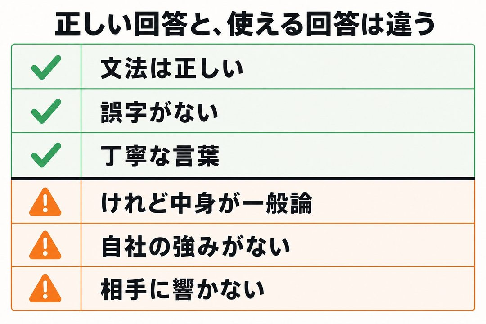
正しい回答と、使える回答は違う
返ってきたメールを読んで、佐野さんは首をかしげました。
文法は完璧。
言葉づかいも丁寧。
挨拶文もそつがありません。
でも、どこかよそよそしいのです。
書かれているのは、どこの会社にでも当てはまりそうな一般論ばかり。
自社ならではの強みも、その取引先だからこそ響く一言も、どこにもありません。
「間違ってはいないんだよな……でも、これじゃ送れない」。
佐野さんはそうつぶやきました。
これこそ、多くの人がAIに感じる違和感の正体です。
AIの答えは、文法的に整い、もっともらしく見えることが多い。
けれど、もっともらしく見えることと、内容が正しいこと、そしてあなたの仕事に使えることは、それぞれ別ものなのです。
なぜ、こんなことが起きるのでしょうか。
答えは意外なほど単純です。
AIは、あなたの状況を何ひとつ知らないからです。
あなたがどんな会社にいて、どんな取引先と、どんな関係を築いてきたのか。
相手が何に悩んでいて、あなたが何を伝えたいのか。
それを一切知らないまま、AIは「一般的に正しそうな文章」を組み立てているだけなのです。
情報がなければ、当たり障りのない答えしか返せない。
これは、AIが優秀かどうかとは関係のない話です。
ここでよくある失敗をひとつ紹介します。
佐野さんは、返ってきた一般論のメールを見て「やっぱりAIはダメだ」と結論づけ、翌日はもうChatGPTを開きませんでした。
うまくいかない原因を、AIの性能のせいにして手を止めてしまう。
これが、いちばん多い挫折の形です。
でも、本当の原因は別のところにありました。
佐野さんが陥った「丸投げ」という落とし穴
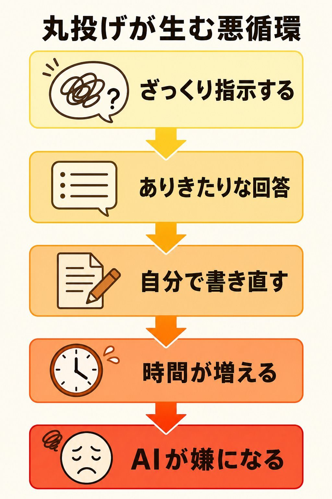
丸投げが生む悪循環
その夜、佐野さんは旧知の後輩、水島遥さんに愚痴をこぼしました。
水島さんは企業のAI活用を支援するコンサルタントです。
「AI使ってみたけど、正直がっかりだよ。
修正する手間が増えただけだ」。
佐野さんがそう言うと、水島さんは少し笑って尋ねました。
「佐野さん、AIに何て頼んだんですか？」。
「営業メールを書いて、ってさ」。
「なるほど」。
水島さんはうなずきました。
「それ、新しく入った新人さんに、いきなり同じことを頼んだらどうなると思います？ 『取引先にメール書いといて』とだけ言って、席を立ったら」。
佐野さんは、はっとしました。
「……そりゃあ、無理だな。
相手が誰かも、何の件かも分からないんじゃ」。
「そうですよね」。
水島さんは続けます。
「でもAIには、それとまったく同じことをしているんですよ」。
想像してみてください。
入社初日の新人に、相手が誰なのかも、何の件なのかも、会社がどんな方針なのかも伝えず、いきなり完成品を求める。
それで満足のいくメールが出てくるはずがありません。
書けたとしても、当たり障りのない一般論になるはずです。
佐野さんがしていたのは、まさにこの「丸投げ」でした。
情報を渡さず、いきなり完成品を求める。
すると、ありきたりな答えが返ってくる。
仕方なく自分で書き直す。
時間が増える。
そして「やっぱりAIは使えない」と結論づけ、遠ざかっていく。
この悪循環に、多くの人がはまっています。
問題は、AIの性能ではなく、渡している情報の量だったのです。
「魔法の道具」という思い込みを手放す
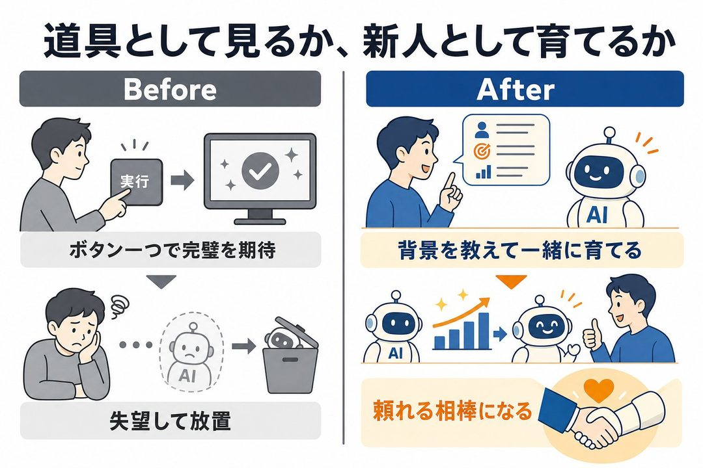
道具として見るか、新人として育てるか
水島さんは続けました。
「みんな、AIを魔法の道具だと思っているんです。
ボタンを押せば、何でも完璧な答えが出てくる、って。
でも、実際は違う。
AIは、新しく入社した、とびきり優秀な新人なんですよ」。
この比喩が、佐野さんの頭のなかで何かをカチッと合わせました。
優秀な新人は、たしかに能力が高い。
物覚えも早いし、文章もうまい。
徹夜だって厭わず、何度でも書き直してくれます。
でも、能力が高いことと、あなたの意図を汲めることは別なのです。
どんなに優秀でも、背景を教えなければ、的外れな成果しか出せません。
逆に言えば、きちんと背景を伝えさえすれば、その優秀さが一気に開花するということです。
「AIに正解を出させようとするから、うまくいかないんです」。
水島さんの言葉には、確信がこもっていました。
「AIに正解を出させるのではなく、AIと一緒に正解へ近づいていく。
そう考え方を変えるだけで、AIは化けますよ」。
「一緒に、近づく……」。
佐野さんは、その言葉を繰り返しました。
「つまり、一発で完璧を出させようとするのが、そもそも間違いってことか」。
「その通りです」。
水島さんは微笑みました。
「新人だって、最初から完璧な仕事はできません。
でも、こちらが背景を教えて、少し方向を直してあげれば、どんどん伸びていく。
AIも、まったく同じなんです」。
佐野さんは、はっとしました。
自分はずっと、AIに完璧を求めていた。
何も教えず、一発で理想の答えが出てこないことに腹を立てていた。
けれど、それは新人に「気を利かせろ」と怒っているのと同じことだったのです。
育てるべき相手を、道具として扱っていた。
そのズレこそが、すべての原因でした。
「じゃあ、具体的にどう教えればいいんだ？」。
前のめりになった佐野さんに、水島さんは笑いました。
「いい質問です。
まずは一番大事な習慣から。
次から、一緒にやってみましょう」。
この章のまとめ
- AIの答えは「正しい」けれど、そのままでは「使えない」。
両者はまったく別ものです。
- 原因はAIの性能ではなく、背景を何も伝えていない丸投げにあります。
うまくいかないとき、AIのせいにして手を止めるのがいちばん多い挫折です。
- AIは魔法の道具ではなく、新しく入社した優秀な新人。
能力は高くても、背景を教えなければ的外れな成果しか出せません。
- 大切なのは、AIに正解を出させることではなく、AIと一緒に正解へ近づいていくこと。
次章から、その第一歩となる習慣を身につけていきます。
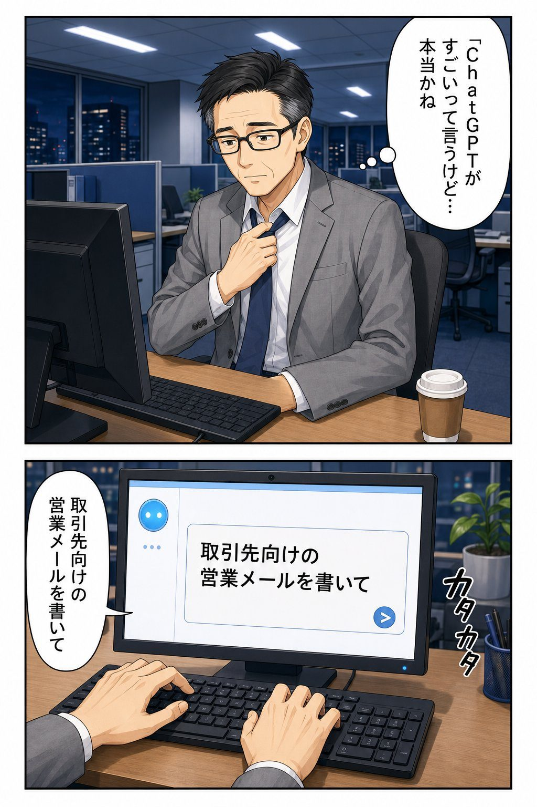
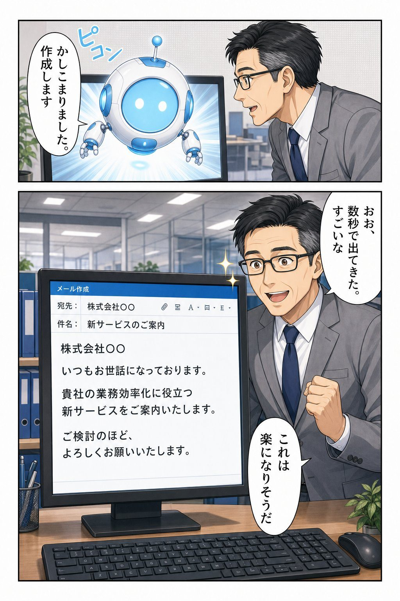
02第2章 習慣1・AIに目的と背景を伝える
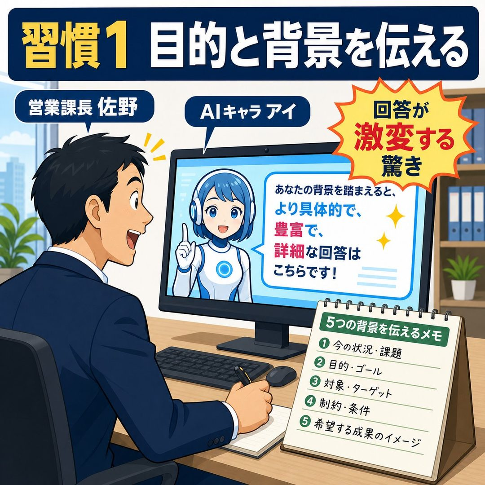
習慣1 目的と背景を伝える
翌朝、佐野さんは少し早めに出社しました。
昨夜の水島さんの言葉が、頭から離れなかったのです。
「AIは優秀な新人」。
ならば、新人に仕事を頼むときと同じように、まず背景を伝えればいい。
頭では分かりました。
でも、いざパソコンの前に座ると、何をどう伝えればいいのか、手が止まってしまいます。
ちょうどそこへ、水島さんから連絡が入りました。
今日は取引先訪問のついでに、佐野さんの会社に立ち寄ってくれるとのこと。
佐野さんは、この機会を逃すまいと、実際の仕事を題材に教えてもらうことにしました。
「営業メールを書いて」では、なぜ刺さらないのか
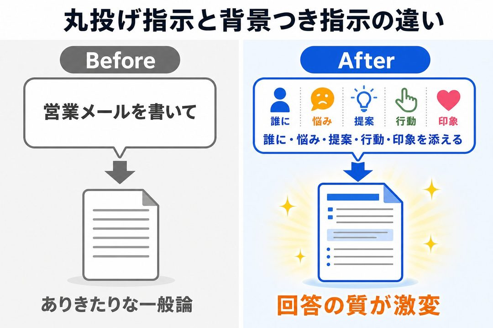
丸投げ指示と背景つき指示の違い
「まず、昨日と同じ指示を出してみてください」。
水島さんに促され、佐野さんは「営業メールを書いて」と打ち込みました。
返ってきたのは、やはり教科書のような文章です。
「ね、悪くはないでしょう。
でも、心に残らない」と水島さん。
「これはAIが悪いんじゃありません。
指示に、判断材料が何もないからです」。
水島さんは画面を指さしました。
「営業メール、と言われても、相手が新規のお客様なのか、十年来の常連さんなのかで、書くべき文章はまったく変わりますよね。
人間なら当然そこを考える。
でもAIは、教えられていないことは考えられないんです」。
佐野さんは深くうなずきました。
たしかに、部下に「メール書いといて」とだけ言うことはありません。
無意識のうちに「〇〇商事の田中さんに、先日の見積もりの件で」と、相手と用件を添えているはずです。
その、当たり前にやっている前置きを、AIには省いてしまっていた。
ここに、丸投げの落とし穴がありました。
「刺さらない回答には、必ず理由があります」。
水島さんは言いました。
「そのほとんどが、伝えるべき背景を伝えていないだけ。
つまり、直せるということです」。
ここでよくある失敗をもうひとつ。
背景が足りないと感じたとき、多くの人は「もっと良い感じに書いて」と付け足します。
ところが、これでは何も変わりません。
AIには「良い感じ」が何を指すのか分からないからです。
曖昧な言葉を重ねるほど、答えもぼやけていく。
必要なのは、飾りの言葉ではなく、具体的な背景なのです。
AIに伝える「5つの背景」
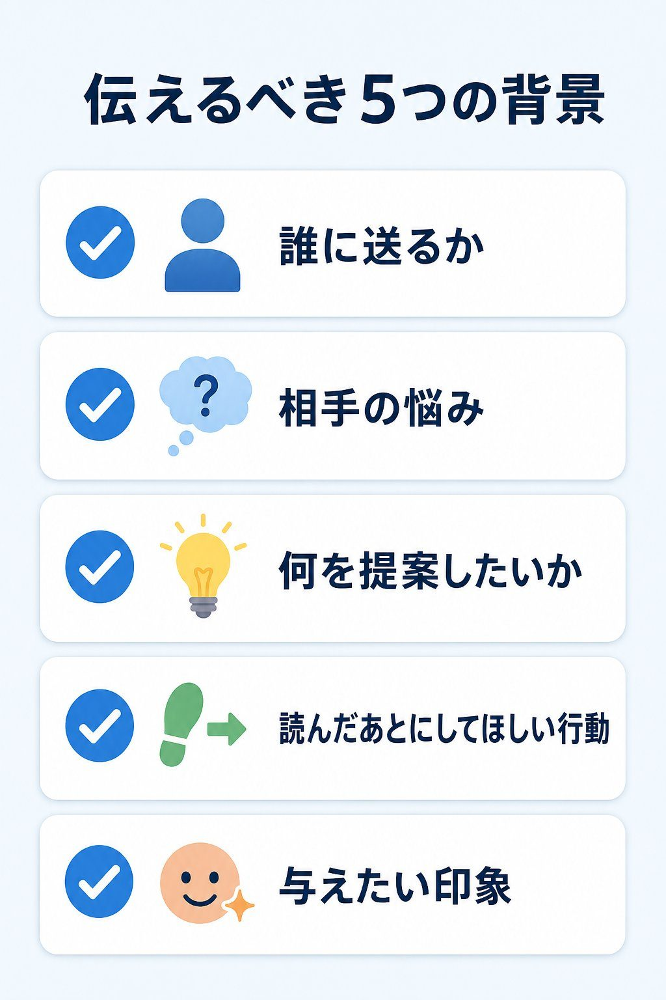
伝えるべき5つの背景
「じゃあ、具体的に何を伝えればいいのか。
営業メールなら、この5つを添えるだけで激変します」。
水島さんは、佐野さんのメモ帳に順番に書き出していきました。
一つ目は、誰に送るのか。
新規の見込み客か、長年の取引先か。
相手の役職や立場も添えると、言葉づかいまで的確になります。
二つ目は、相手が抱えている悩み。
人は、自分の困りごとに触れてくれる相手に心を開きます。
「納期の遅れに困っている」「コストを見直したい」…その一言があるだけで、メールの説得力はまるで変わります。
三つ目は、何を提案したいのか。
自社の商品やサービスの、どの部分を推したいのか。
ここが曖昧だと、AIは無難な自己紹介に終始してしまいます。
四つ目は、読んだあとにしてほしい行動。
返信がほしいのか、打ち合わせの日程を決めたいのか、資料請求を促したいのか。
ゴールを示すと、文章全体がそこへ向かって流れます。
五つ目は、与えたい印象。
誠実さか、熱意か、それとも専門家としての頼もしさか。
この一つで、同じ内容でも読後感がまったく変わります。
「難しく考えなくて大丈夫」と水島さん。
「新人に仕事を頼むとき、自然に説明していることを、そのまま言葉にするだけです」。
言葉だけでは分かりにくいので、実際の指示文で見比べてみましょう。
まず、これまでの丸投げの指示です。
「営業メールを書いて」
次に、5つの背景を添えた指示です。
「新規開拓先の総務部長あてに、コスト削減の提案メールを書いてください。
相手はいま、古くなったコピー機の更新費用に悩んでいます。
当社の無料コスト診断サービスを紹介し、一度診断を申し込んでほしい。
誠実で、押しつけがましくない印象でお願いします」
二つを並べると、違いは一目瞭然です。
後者には、誰に・どんな悩み・何を提案・してほしい行動・与えたい印象が、すべて短い一文の中に収まっています。
特別な専門用語も、複雑な書き方も使っていません。
ただ、頭の中にある前提を、そのまま文字にしただけ。
それでも、AIが受け取る情報量はまるで違うのです。
実際にやってみると、AIが変わった
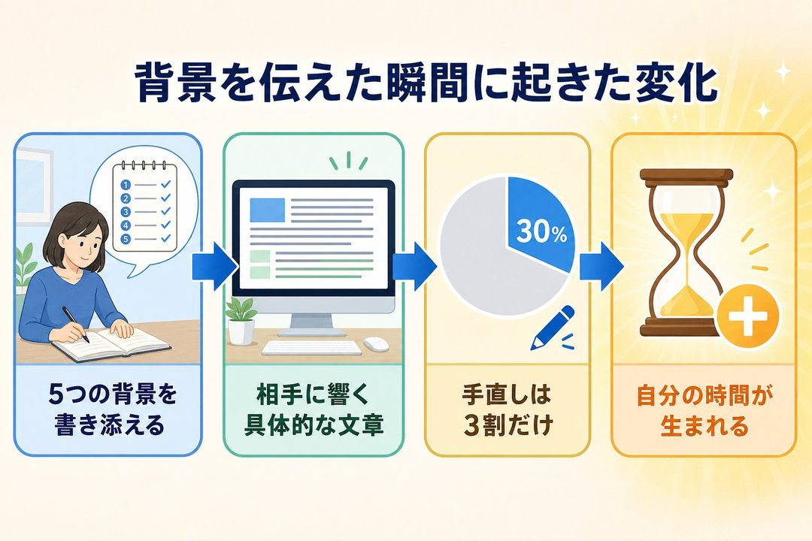
背景を伝えた瞬間に起きた変化
さっそく、佐野さんは自分の案件で試してみました。
「相手は、三年来の取引先である丸和物流の購買担当・佐藤部長。
最近、倉庫の人手不足に悩んでいる。
当社の新しい在庫管理システムを提案したい。
読んだら一度オンラインで話を聞いてみようと思ってもらいたい。
誠実で、押しつけがましくない印象で」。
そして最後に、「この内容で営業メールを書いて」。
数秒後…佐野さんは、思わず声を上げました。
「おお……全然違う」。
返ってきたメールは、佐藤部長の人手不足という悩みに寄り添う一文から始まり、システムがその悩みをどう軽くするかを、押しつけがましくない言葉で綴っていました。
最後には、自然な流れでオンライン相談への一歩を促す一文まで。
さっきまでの一般論とは、別ものの文章でした。
「すごいな……昨日と同じAIとは思えない」。
佐野さんが漏らすと、水島さんは首を振りました。
「AIは何も変わっていませんよ。
変わったのは、佐野さんの伝え方です」。
もちろん、完璧ではありません。
自社ならではの細かな表現や、佐藤部長との過去のやりとりに触れた部分は、佐野さんが手で直す必要がありました。
それでも…直すのは、全体の3割ほど。
残りの7割は、そのまま使える下書きになっていたのです。
「これですよ」。
水島さんが笑いました。
「一発で完璧を求めるんじゃなく、7割の下書きを数秒で作らせて、残りの3割を自分で仕上げる。
この割り切りができた人から、仕事が変わっていくんです」。
佐野さんは、初めてAIを「使えた」と感じました。
同時に、これまで自分がいかに情報を渡さずに文句を言っていたか、少し恥ずかしくもなりました。
明日から試すのは、とても簡単です。
いつもの指示を打つ前に、ひと呼吸おいて5つの背景をメモする。
誰に、どんな悩み、何を提案、してほしい行動、与えたい印象。
この五つを一行ずつ書き出してから、最後に「この内容で書いて」と添えるだけ。
慣れれば十秒もかかりません。
最初はメモ帳に五項目を並べておき、埋めながら指示文を組み立てるとよいでしょう。
その日の午後、佐野さんはいくつかのメールをこのやり方で作りました。
夕方、隣の席の部下がぽつりと言いました。
「課長、今日なんだか仕事早くないですか？」。
佐野さんは、こっそり口角を上げました。
習慣は、たった一つ変えるだけで、確かな手応えに変わる。
その実感が、次の習慣への意欲に火をつけたのです。
この章のまとめ
- 「営業メールを書いて」だけの丸投げでは、AIは判断材料がなく、ありきたりな一般論しか返せません。
- 依頼の前に5つの背景…誰に・相手の悩み・何を提案したいか・してほしい行動・与えたい印象…を添えるだけで、回答は激変します。
- 「もっと良い感じに」と曖昧な言葉を重ねても改善しません。
必要なのは飾りではなく、具体的な背景です。
- 難しいプロンプトは不要。
新人に仕事を頼むとき自然に説明していることを、言葉にするだけで十分です。
- 完璧を求めず、7割の下書きを作らせ、3割を自分で仕上げる。
この割り切りが、AIを相棒に変える第一歩です。
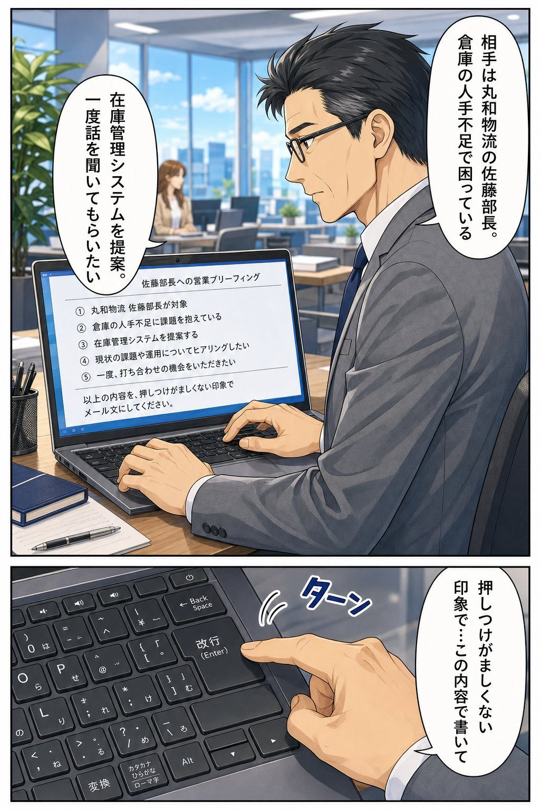
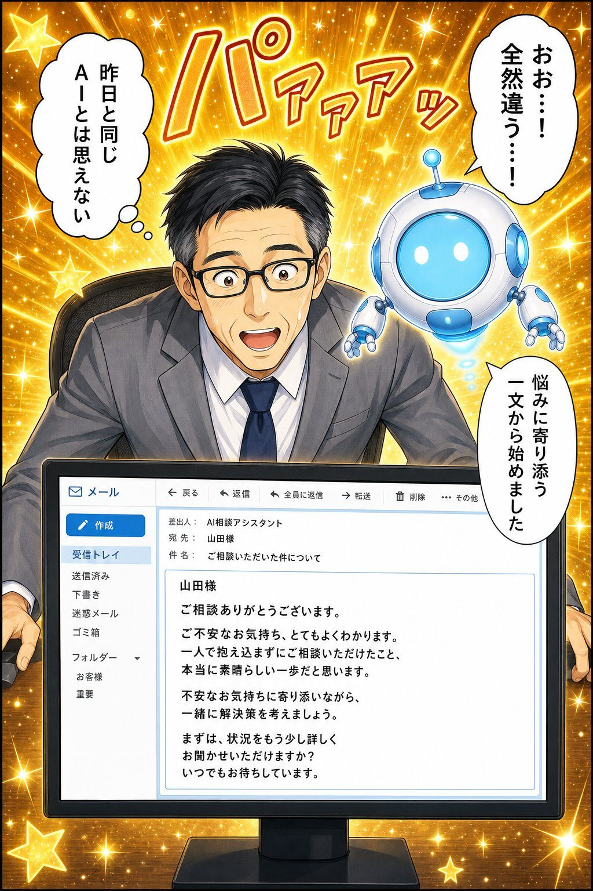
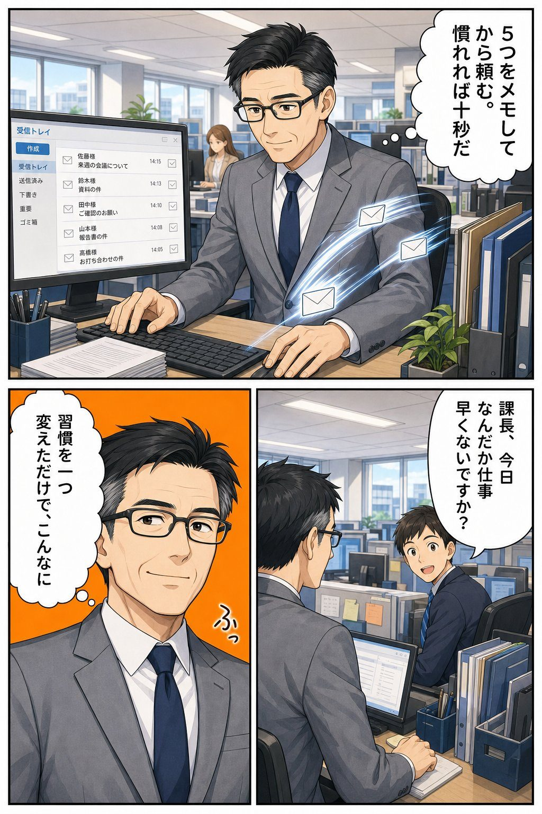
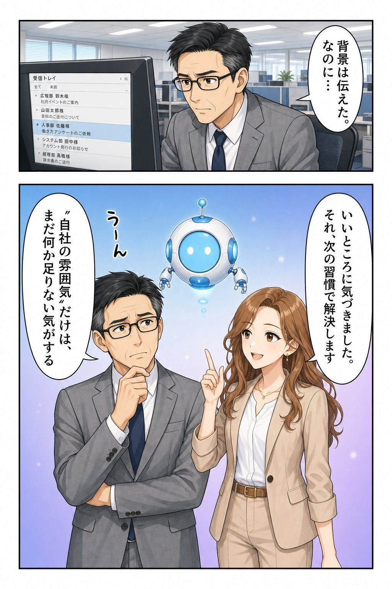
03第3章 習慣2・3・見本を渡し、いきなり作らせず相談する
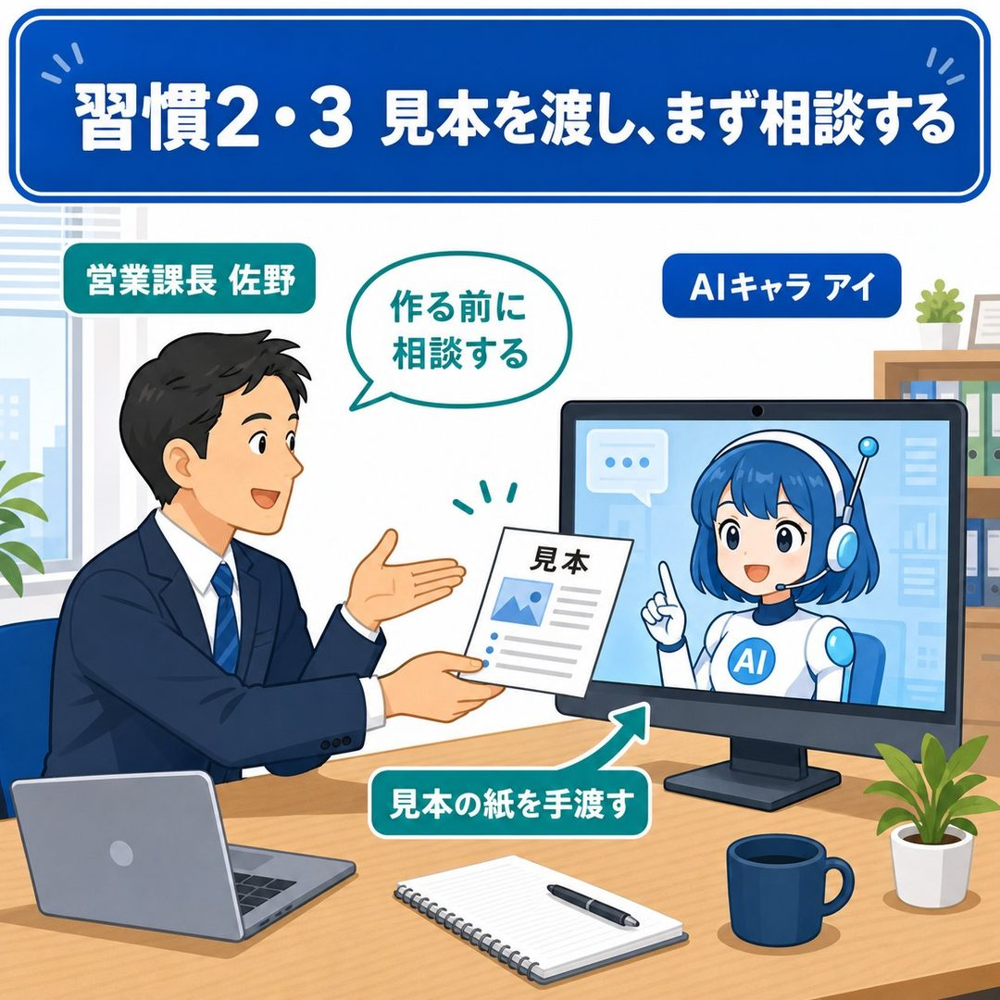
習慣2・3 見本を渡し、まず相談する
背景を伝えるコツをつかんだ佐野健一は、少し自信を持ち始めていました。
ところが翌週、提案資料の要約をAIに頼んだとき、また同じ壁にぶつかります。
返ってきた文章は間違ってはいないのに、どこか自社の雰囲気と違う。
堅すぎたり、逆に軽すぎたり。
「背景は伝えたのに、なぜ思った感じにならないんだ」。
佐野はまた頭を抱えました。
そこへ立ち寄った水島遥が、画面をのぞき込んで言います。
「佐野さん、AIに“こういう感じ”って、言葉だけで伝えようとしていませんか」。
図星でした。
「丁寧に、でも堅くなりすぎず、親しみやすく」…そんな形容詞を並べれば並べるほど、AIの回答はぼやけていく。
水島は続けます。
「新人に仕事を教えるとき、口で説明するより、良い資料を一枚見せたほうが早いですよね。
AIも同じなんです」。
この章では、見本を渡す習慣と、いきなり作らせず相談する習慣を学びます。
習慣2・完成形の見本を渡す
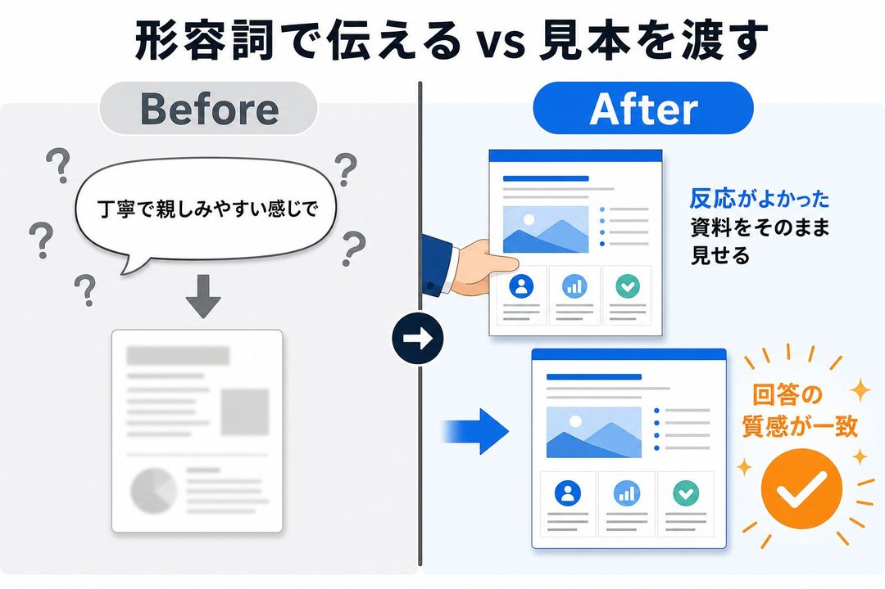
形容詞で伝える vs 見本を渡す
佐野が「丁寧で親しみやすい感じで」と何度言い直しても、AIの文章はしっくりきませんでした。
原因はシンプルです。
丁寧・親しみやすい・かっこいい…こうした形容詞は、人によって思い浮かべるものがまるで違うからです。
あなたの「親しみやすい」と、AIが学んだ無数の「親しみやすい」は、同じ言葉でも中身がずれています。
言葉で質感を伝えるのは、想像以上に難しいのです。
これは、よくある失敗でもあります。
佐野は以前、社内報のコラムを「もっとやわらかい雰囲気で」とだけ頼み、五回も書き直させた挙句、どれもピンとこず、結局自分で一から書き直しました。
「やわらかい」の中身を、AIと共有できていなかったのです。
言葉のキャッチボールで質感を詰めようとすると、時間だけが溶けていきます。
そこで水島がすすめたのが、習慣2「見本を渡す」でした。
やり方は拍子抜けするほど簡単です。
過去にお客様の反応がよかったメールや、自分が良いと思った資料を、そのままAIに貼り付けて見せる。
そして「この文章のトーンや言い回しをまねて、今回の提案メールを書いて」とお願いするだけ。
抽象的な形容詞を捨て、実物を一枚渡す。
これが最短ルートです。
具体的な頼み方は、たとえばこうです。
反応のよかったメールを貼り付けたうえで、「この文章の丁寧さ・一文の長さ・語尾の柔らかさをそのまねて、新商品の案内メールを書いて」。
ポイントは、まねてほしい部分を「一文の長さ」「語尾」と具体的に指定すること。
「まねて」とだけ言うより、まねる観点を示すと、質感の再現度がぐっと上がります。
佐野は半信半疑で、去年いちばん商談につながった挨拶メールをコピーし、AIに貼り付けました。
「この温度感で、新商品の案内を書いて」。
すると…出てきた文章は、まるで佐野自身が書いたような言い回しになっていたのです。
「これだ。
俺がいつも使う“お世話になっております”の後の一言まで似てる」。
思わず声が出ました。
すかさず水島が笑います。
「ね? 百の形容詞より、一枚の見本のほうが速いでしょう」「完全に負けたよ。
俺の説明力より、コピペのほうが優秀だ」。
見本は、百の形容詞よりも速く、正確にゴールを伝えるのです。
見本にできるものは、文章だけではありません。
表の作り方、資料の構成、報告のフォーマット、話し方の口調…「こういうふうにしてほしい」という完成形があるなら、まずそれを探して渡す。
明日からできる手順はシンプルです。
①これまでで一番うまくいった資料やメールを一つ探す、②それをAIに貼る、③「このトーンと構成をまねて、今回の◯◯を作って」と頼む。
ゼロから言葉で説明する癖を捨て、手元の“お手本”を一つ見せる。
この習慣が身につくと、AIとのやり取りは驚くほどスムーズになります。
習慣3・いきなり作らせず、最初に相談する
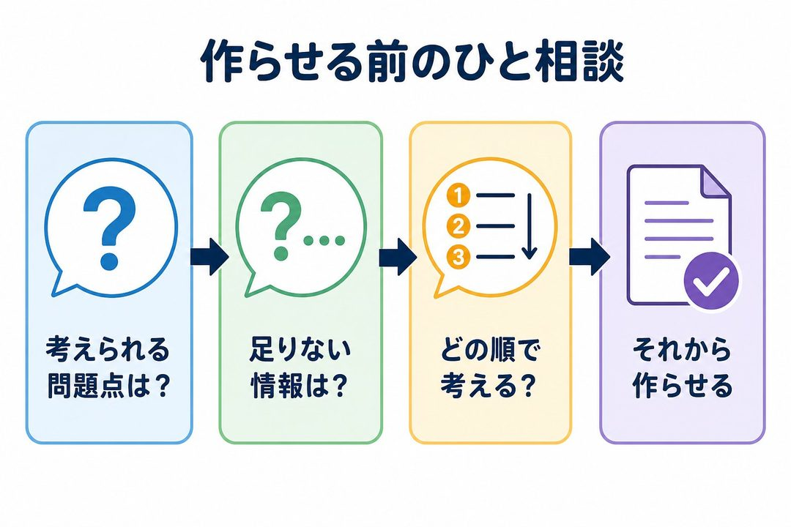
作らせる前のひと相談
見本を渡す習慣を覚えた佐野は、次第にAIを頼るようになりました。
しかし、大きな仕事になると、また空回りが始まります。
新規開拓の企画書を「作って」と一発で命じたところ、それらしい体裁の文書は出てきたものの、肝心の中身が的外れ。
想定していない業界の話が延々と並び、自社の商材とはかみ合っていません。
「見た目は立派なのに、使えない」。
手直しに一時間かかり、佐野はまた「自分でやったほうが早い」とつぶやきかけました。
「佐野さん、それ、いきなり完成品を頼んでいませんか」。
水島の指摘に、佐野はハッとします。
「新人にいきなり“企画書を完成させて”と丸投げしたら、どうなります?」「……そりゃ、見当違いのものが上がってくるな」。
「AIも同じです。
優秀な新人ほど、作る前に一度相談したほうがいいんです」。
これが習慣3、いきなり作らせず、最初に相談する、です。
具体的には、作成を命じる前に、こう聞きます。
「この企画書を作るうえで、考えられる問題点は何?」「足りない情報はある?」「どういう順番で考えるのがいい?」。
作業そのものを頼むのではなく、作業の“進め方”を一緒に考えてもらう。
AIを実行係ではなく、壁打ちの相手として使うのです。
人間相手だと気をつかう相談も、AIならいくらでも投げられます。
相談文は、こんな一文にまとめると便利です。
「この企画で考えられる問題点を5つ挙げて。
そのうえで、私が先に決めておくべきことは何?」。
前半で盲点を洗い出させ、後半で「作る前に自分が決めるべきこと」を教えてもらう。
この二段構えで頼むと、AIは作業に飛びつく前に、土台の抜けを教えてくれます。
佐野が試すと、AIはこう返しました。
「この企画書には、想定顧客の規模感と、競合との違いが不足しています。
まず提案先の課題を整理し、次に自社の強み、最後に導入効果の順で構成すると伝わりやすくなります」。
的確な指摘でした。
「なるほど、俺が抜かしていた視点だ」。
相談を一往復はさむだけで、そのあと作らせた企画書の精度は見違えました。
「面白いだろう、佐野さん」と水島。
「作らせる前に相談すると、AIが“何が足りないか”を先に教えてくれる。
手戻りが消えるんです」。
「たしかにな。
いつもは作らせてから“ここが違う”って直してた。
順番が逆だったのか」。
「そう。
急がば回れ。
作らせる前のひと相談が、手直しの時間を丸ごと消すんです」。
明日から試すなら、何かを作らせる前に必ず一度、「考えられる問題点と、先に決めるべきこと」を聞く。
この一手間を挟むだけです。
水島は言い添えました。
「佐野さんの名言をお借りするなら…AIに正解を出させるんじゃなくて、AIと一緒に正解へ近づくんです。
相談は、その第一歩ですよ」。
この章のまとめ
- 質感は形容詞では伝わらない。
反応がよかった資料を見本としてそのまま渡すと、AIは一発でゴールをつかむ。
まねてほしい観点まで指定するとなお良い。
- 大きな仕事は、いきなり作らせない。
「問題点を5つ挙げて。
先に決めるべきことは?」と相談してから作らせると、手直しが激減する。
- AIは実行係ではなく、気をつかわずに使える壁打ち相手。
作る前のひと相談が、いちばんの時短になる。
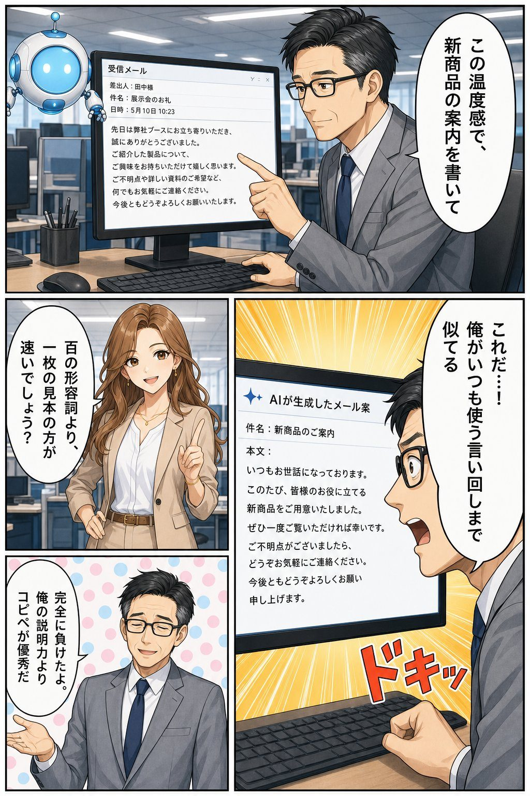
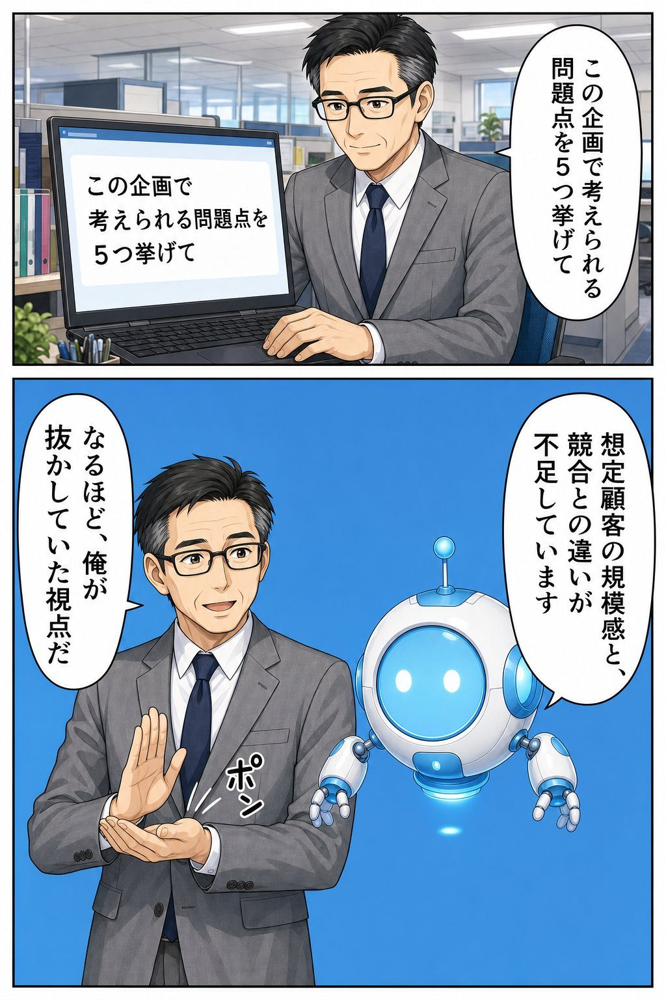
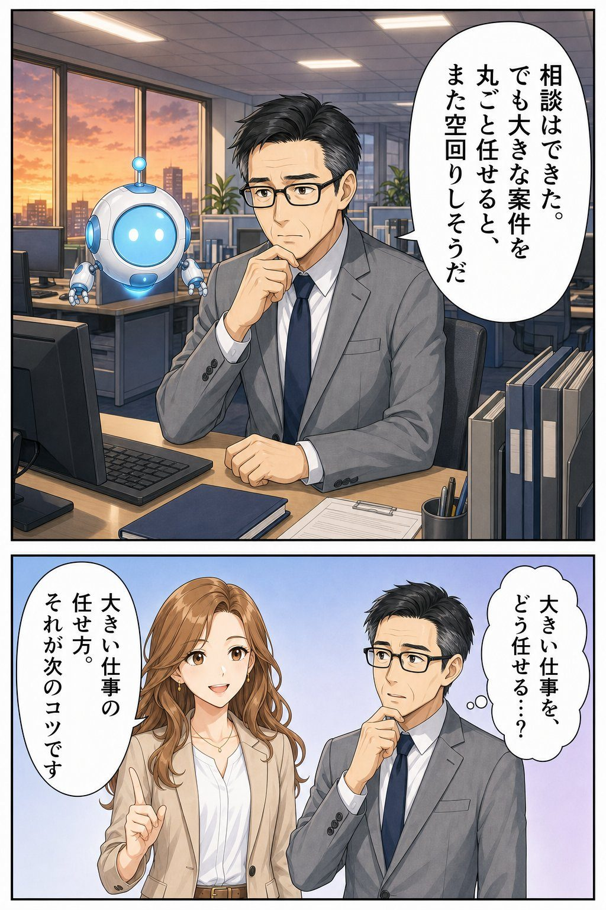
04第4章 習慣4・5・AIに質問させ、大きな仕事を小さく分ける
習慣4・5 質問させ、小さく分ける
相談する習慣を覚えた佐野健一でしたが、あるとき大きな案件で再び立ち止まります。
新商品を売り出すための販売企画を、丸ごとAIに任せてみたのです。
「新商品の販売企画を、いい感じにまとめて」。
返ってきたのは、教科書のように整った、けれど自社にはまるで当てはまらない一般論の羅列でした。
「これじゃ、どこかのビジネス書の目次だ」。
がっかりした佐野は、パソコンを閉じかけました。
通りかかった水島遥が、その画面を見て小さく笑います。
「佐野さん、それ、AIに全部“おまかせ”しちゃってますね」。
「大きい仕事ほど任せたいだろう」「気持ちはわかります。
でも、大きな仕事の丸投げは、いちばんうまくいかない使い方なんです」。
この章では、AIに質問させて考えを整理する習慣と、大きな仕事を小さく分ける習慣を学びます。
二つはセットで効く、いわば車の両輪です。
習慣4・AIに質問させて、考えを整理する
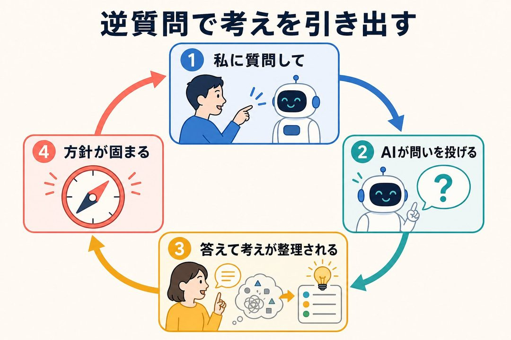
逆質問で考えを引き出す
「佐野さん、実は自分でも、何を作りたいか固まっていないんじゃないですか」。
水島の言葉に、佐野は黙りました。
図星です。
頭の中がぼんやりしたまま「いい感じに」と頼むから、AIも一般論で返すしかない。
でも、自分の考えを一から言葉にするのは骨が折れます。
そこで使うのが習慣4です。
やり方は、驚くほど簡単なひと言。
「この仕事を進めるために必要なことを、あなたのほうから私に質問して」。
作らせるのではなく、AIに質問させる。
すると立場が逆転します。
AIが「販売のターゲットは誰ですか」「予算はどのくらいですか」「いつまでに売り出しますか」と、次々と問いを投げてくる。
佐野はそれに答えるだけでいい。
答えているうちに、ぼんやりしていた自分の考えが、みるみる形になっていくのです。
より使いやすい頼み方は、こうです。
「この販売企画を私と一緒に固めたい。
必要な情報を、一度に一問ずつ質問して。
私が答えたら次を聞いて」。
「一度に一問ずつ」と指定するのがコツです。
まとめて十問投げられると答える気が失せますが、一問ずつなら、会話のように無理なく答えられます。
ここでよくある失敗が、質問させても佐野が面倒がって「全部まとめて聞いて」と頼み、結局十問並んで手が止まる、というもの。
一問一答のリズムを崩さないことが、続けるコツです。
佐野が試すと、AIは矢継ぎ早に…いや、一問ずつ聞いてきました。
「主力の顧客層は既存客ですか、新規ですか」。
「うーん……既存かな」。
「その既存のお客様が、いま抱えている一番の不満は?」。
答えていくうち、佐野は思わずつぶやきます。
「……そうか、俺は新規より、既存のお客さんに深く売りたかったんだ」。
その様子を見て水島が言いました。
「今、AIに教わったんじゃなくて、自分で気づきましたよね」「ああ。
聞かれて初めて、自分の本音がわかった」「それでいいんです。
AIは、答えをくれる相手であると同時に、こちらの考えを整理してくれる聞き手にもなる」。
人に相談すると気をつかう質問も、AIなら何度でも付き合ってくれます。
明日試すなら、企画やメールに詰まったとき、まず「必要なことを一問ずつ質問して」と打ち込んでみてください。
習慣5・大きな仕事を、小さく分ける
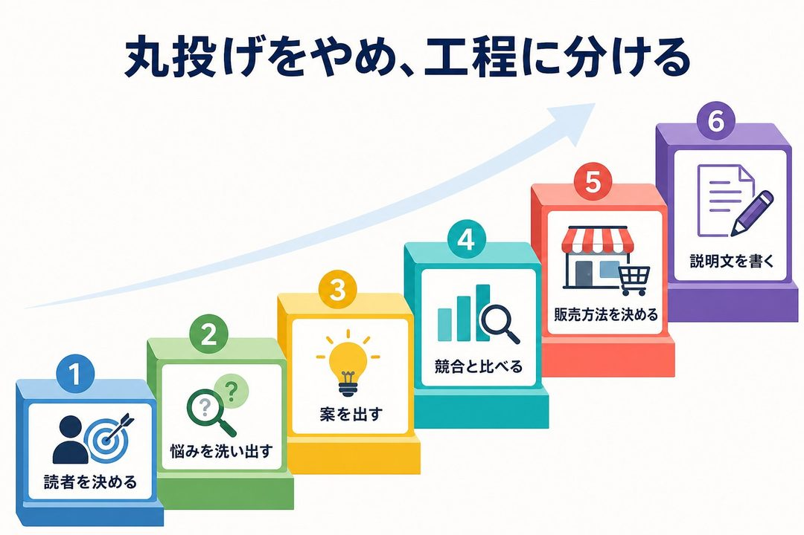
丸投げをやめ、工程に分ける
考えが整理できても、「販売企画を全部作って」という頼み方のままでは、やはりAIは力を出せません。
ここで習慣5の出番です。
大きな仕事は、一度に頼まず、小さな工程に分けて、一つずつ進める。
これが、AIをいちばん賢く働かせるコツです。
思い出してほしいのが、章の冒頭の失敗です。
佐野が「販売企画をいい感じにまとめて」と丸投げしたとき、返ってきたのは自社と無関係な一般論でした。
大きな塊のまま渡すと、AIはどこに焦点を当てていいか分からず、当たり障りのない平均点の答えに逃げます。
これが丸投げの正体です。
水島は紙にこう書いて見せました。
販売企画なら、まず①誰に売るかを決める、次に②その人の悩みを洗い出す、それから③商品の見せ方の案を出す、④競合と比べる、⑤販売方法を決める、⑥最後に商品説明文を書く…というように、ゴールまでの道のりを、階段のような工程に分ける。
そして各工程が終わるたびに、佐野が中身を確認してから次へ進むのです。
「一段ずつ上れば、途中でおかしくなってもすぐ気づけますよね」。
工程分けも、AIに手伝ってもらえます。
「この販売企画を完成させるまでの作業を、6つくらいの工程に分けて。
今日はまず1つ目だけ一緒にやろう」。
こう頼めば、AIが道筋を引いてくれます。
あとは「では1つ目のターゲット設定から始めよう」と、一段ずつ登るだけ。
一工程が終わるたびに「ここまでOK。
次へ」と確認を挟むのを忘れないでください。
佐野は早速、この順でAIと進めました。
①でターゲットを既存客に定め、②で「買い替えの見送り」という悩みを掘り当て、③で三つの訴求案を出させる。
一工程ごとに立ち止まり、「ここは違う」「ここはいい」と手を入れながら進む。
丸投げで一時間かけて作り直した企画とは、精度がまるで違いました。
「一気に登ろうとするから転ぶんだな。
一段ずつなら、確実だ」。
「どうです、丸投げのときと」と水島。
「比べものにならないよ。
さっきまで的外れだったAIが、今は隣で一緒に考えてる感じだ」「同じAIなんですよ。
変わったのは佐野さんの任せ方だけ」。
大きな塊のままだと手に負えない仕事も、小さく割れば、AIも自分も迷わないのです。
この習慣4と習慣5は、セットで威力を発揮します。
まずAIに質問させて考えを整理し（習慣4）、固まった方針を工程に分けて一つずつ進める（習慣5）。
丸投げして一般論をもらう働き方から、一緒に一段ずつ積み上げる働き方へ。
佐野の仕事の進め方は、この章で大きく変わりました。
この章のまとめ
- 考えが固まらないときは「必要なことを一問ずつ質問して」。
AIの逆質問に答えるうちに、自分の頭の中が整理される。
- 大きな仕事の丸投げは失敗のもと。
読者を決め、悩みを抽出し、案を出し、競合と比べ、販売方法を考え、説明文をつくるというように工程に分け、各段で確認する。
工程分け自体もAIに頼める。
- 習慣4と5はセット。
整理してから小さく分ければ、AIも自分も迷わず、精度は丸投げの比ではない。
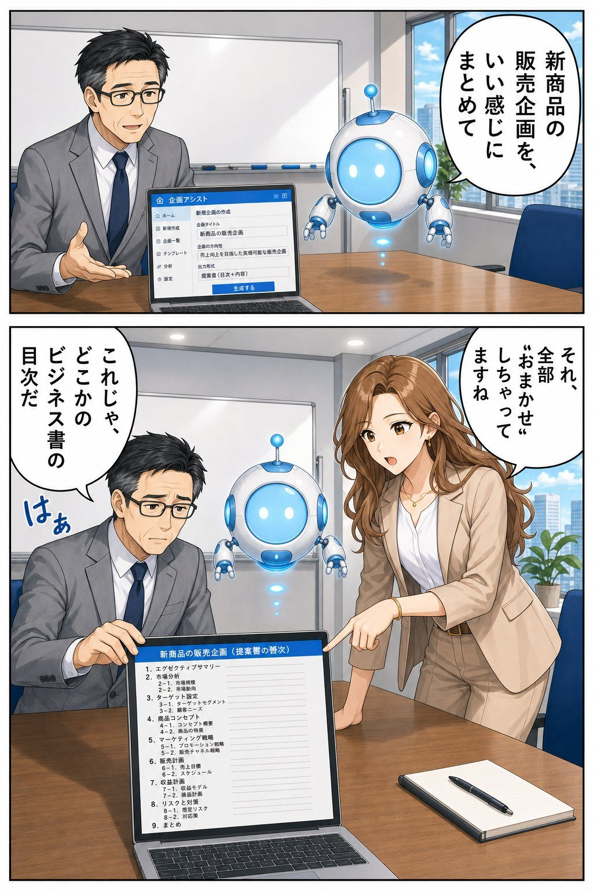
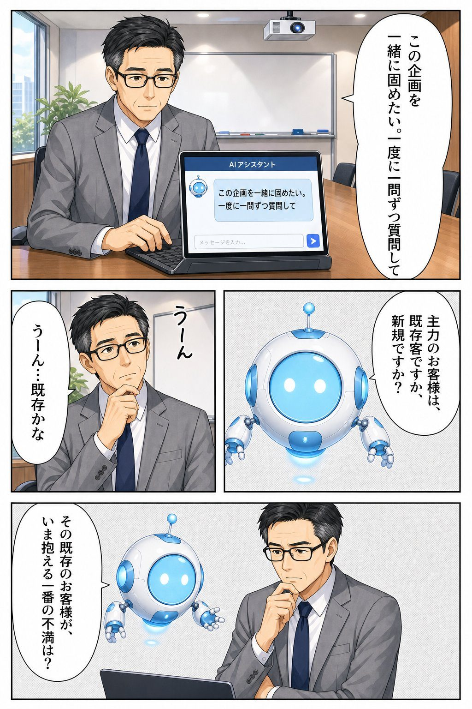
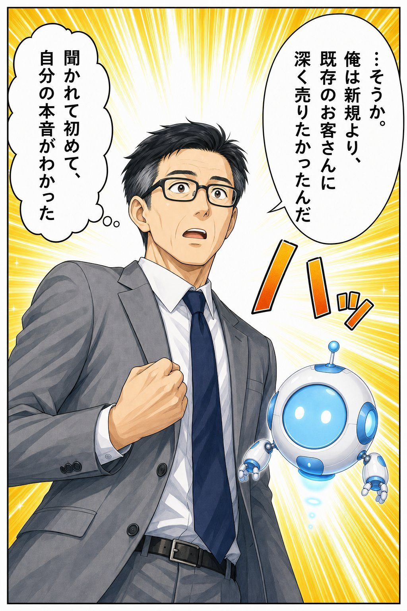
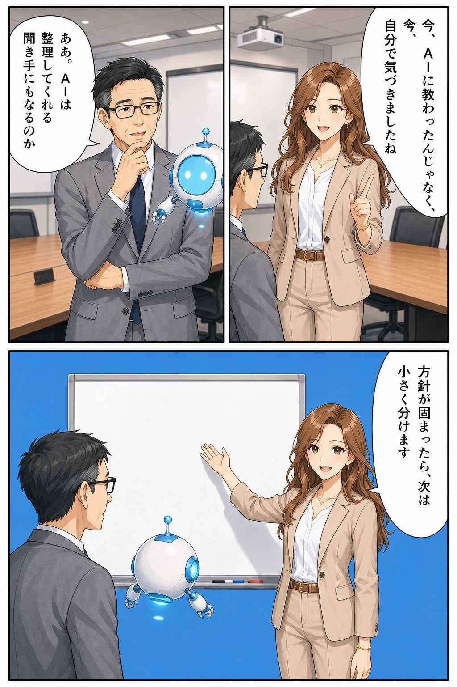
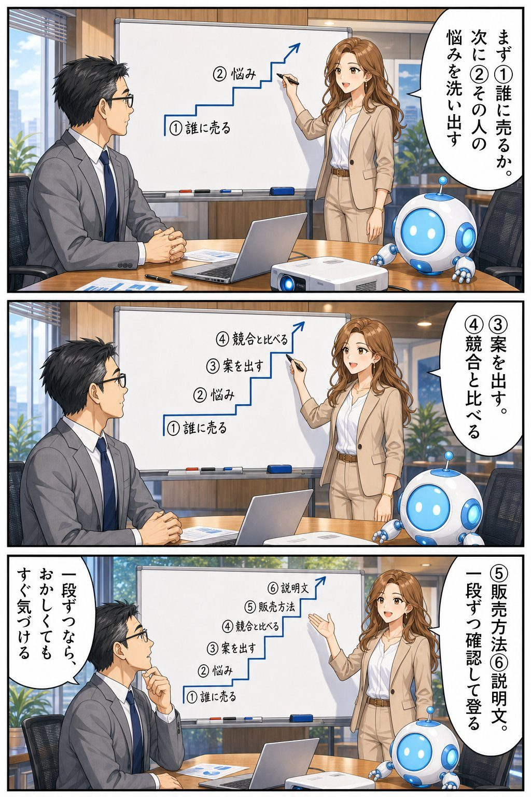
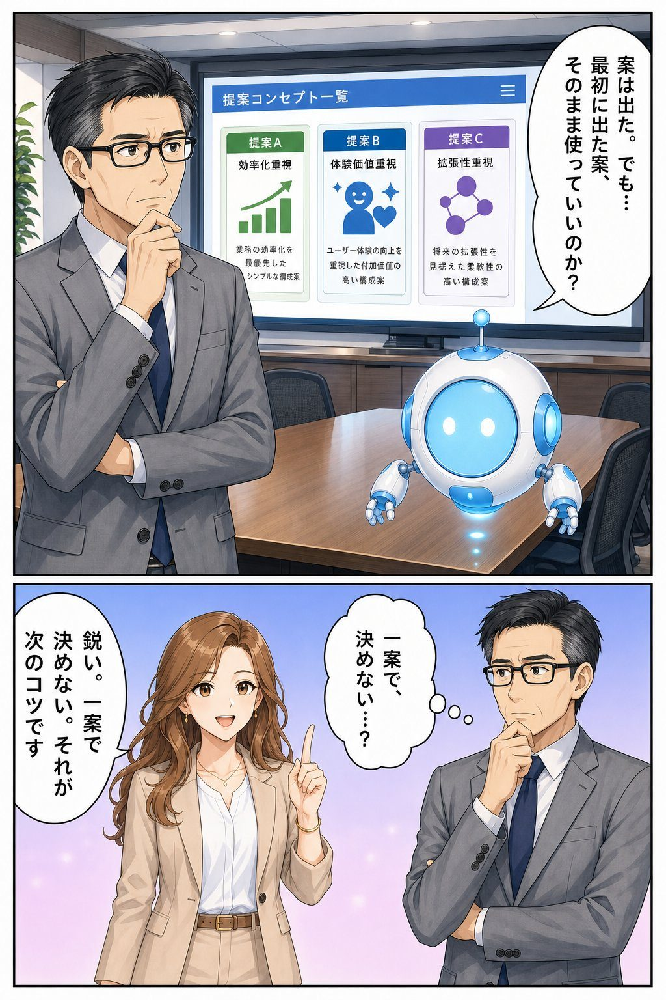
05第5章 習慣6・7・一案で決めず、違和感を具体的に伝える
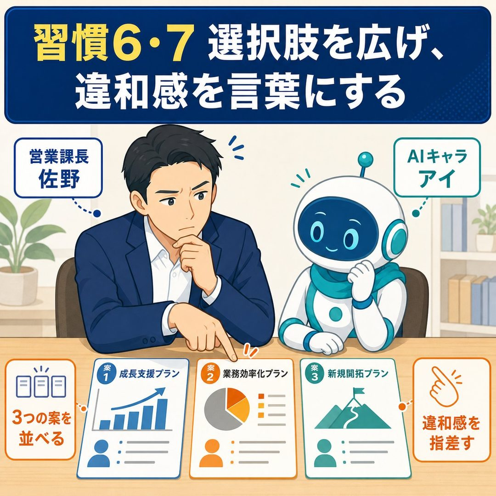
習慣6・7 選択肢を広げ、違和感を言葉にする
工程に分けて進める習慣を身につけた佐野健一は、AIとの仕事がすっかり板についてきました。
けれど、ある落とし穴がまだ残っていました。
AIが出してきた最初の案を、つい「これでいこう」とそのまま採用してしまう癖です。
ある日、キャッチコピーを一つ作らせ、そのまま資料に載せたところ、上司から「悪くないけど、他に案はなかったの?」と聞かれ、言葉に詰まりました。
「佐野さん、AIの最初の答えを、正解だと思っていませんか」。
水島遥の問いに、佐野は苦笑いします。
「一つ出してくれると、つい、それが答えだと思ってしまうな」。
「AIは、正解を一つ出す機械じゃないんです。
選択肢をいくらでも広げてくれる、アイデアの相棒なんですよ」。
この章では、一つの回答で決めない習慣と、違和感を具体的に伝える習慣を学びます。
どちらも、AIを“清書係”から“発想のパートナー”に変える習慣です。
習慣6・一つの案で決めず、方向の違う3案を出させる
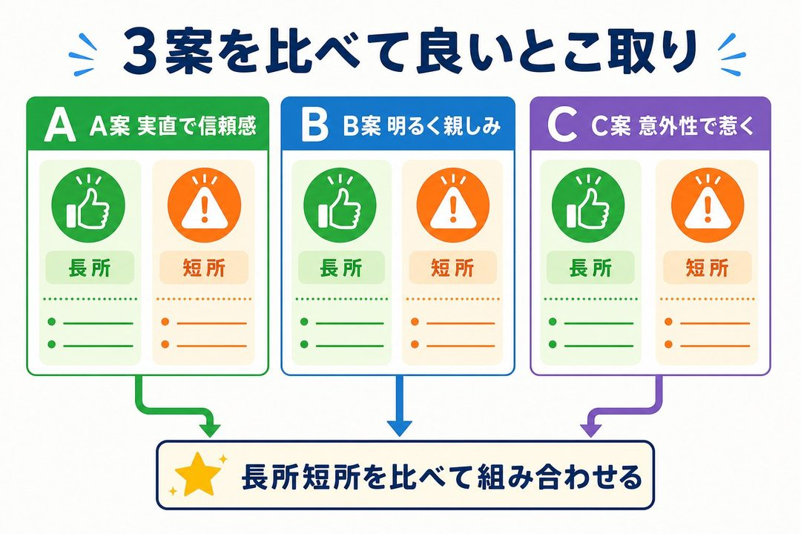
3案を比べて良いとこ取り
佐野の癖は、最初の一案をそのまま使ってしまうことでした。
水島はこう教えます。
「一つだけ頼むから、それが良いか悪いか判断できないんです。
方向性の違う案を、まとめて三つ出してもらいましょう」。
頼み方はこうです。
「このキャッチコピーを、実直な方向・親しみやすい方向・意外性のある方向で、それぞれ3つ作って。
最後にそれぞれの長所と短所も一言ずつ添えて」。
一度に複数、しかも違うタイプで、長所短所つきで出させるのがコツです。
なぜ三つなのか。
人は、比べるものがあって初めて、良し悪しを判断できるからです。
一案だけでは「まあ、いいかな」で止まってしまう。
ところが三案を並べると、「A案は信頼感はあるが固い」「B案は親しみやすいが軽い」「C案は目を引くが誤解されそう」と、それぞれの長所と短所がくっきり見えてきます。
佐野がやってみると、まさにその通りでした。
「一つずつだと気づかなかった違いが、並べた瞬間に見える」。
ここでのよくある失敗は、三案出させたのに、結局「じゃあA案で」と一つだけ選んで終わってしまうこと。
それではもったいない。
三つの中から一つを選ぶのではなく、良い部分を組み合わせるのが本当の狙いです。
佐野は「A案の信頼感のある言葉に、B案の親しみやすい語尾を足して」とAIに頼みました。
すると、どの一案よりも良いコピーが生まれたのです。
「見てくれ、水島さん。
三つのいいとこ取りをしたら、四つ目の一番いいのができた」「それが習慣6の醍醐味です。
AIは正解を当てる相手じゃなくて、材料をたくさん出してくれる相手」「そうか。
俺は今まで、最初に出た材料一個だけで料理してたんだな」。
AIに求めるのは唯一の正解ではなく、選択肢の広がり。
選んで組み合わせて磨き上げるのは、人間の仕事なのです。
明日試すなら、案を頼むときは必ず「方向の違うものを3つ」と付け足してみてください。
習慣7・「なんか違う」を、具体的な言葉に変える
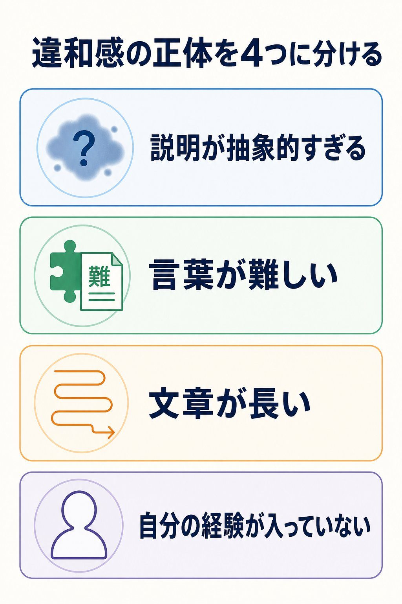
違和感の正体を4つに分ける
三案を組み合わせても、まだ「なんとなくしっくりこない」ときがあります。
そんなとき佐野は、AIに向かって「なんか違うんだよなあ、もっといい感じにして」と頼んでいました。
ところが、何度言い直しても、返ってくるのは似たり寄ったり。
「もっと良く、が通じない」。
佐野は途方に暮れます。
これは、多くの人がつまずく失敗です。
漠然とした不満をぶつけても、AIには何を直せばいいか伝わらないのです。
水島は言います。
「“なんか違う”は、AIには一番伝わらない言葉なんです。
人間の部下だって、“なんか違う、直して”とだけ言われたら困りますよね」。
「たしかに、パワハラだな」「ふふ。
だから、違和感の正体を、こちらが言葉にしてあげるんです」。
これが習慣7、違和感を具体的に伝える、です。
コツは、漠然とした「違う」を、いくつかの角度に分けてみること。
たとえば…説明が抽象的すぎるのか、使っている言葉が難しいのか、文章が長くて回りくどいのか、それとも自分の経験や実感が入っていなくて他人事に聞こえるのか。
この四つのどれに引っかかっているのかを見極め、正体を名指しで伝えます。
伝え方は、こんな一文にできます。
「ここは説明が抽象的すぎる。
うちの現場の具体例を1つ入れて、中学生でもわかる言葉に直して」。
「抽象的すぎる」という診断と、「具体例を入れる」「やさしい言葉に」という処方を、セットで渡すのがポイントです。
どこがどう悪くて、どう直したいか。
この二つを言葉にできれば、AIは的確に応えてくれます。
佐野が実際にそう伝えると、AIの文章は一気に血の通ったものに変わりました。
「“なんか違う”を四つに分けただけで、こんなに直せるのか」。
水島がうなずきます。
「気づきましたか。
この“違いを言葉にする力”、AIへの指示だけじゃないんです」「というと?」「部下への指導も、自分の企画の見直しも、全部同じ。
“なんとなくダメ”を“どこがどうダメ”に変えられる人が、伸びるんです」。
佐野は深く納得しました。
違和感を言葉にできた瞬間、それはもう半分解決しているのです。
明日から試すなら、AIの答えに「なんか違う」と感じたら、口に出す前に一呼吸おいて、四つのうちどれかを探してみてください。
抽象的すぎるのか、言葉が難しいのか、長いのか、実感が薄いのか。
正体が見えれば、直し方は自然と決まります。
水島は微笑みます。
「佐野さん、もうAIを“使う”んじゃなくて、“一緒に考える”側になってきましたね」。
この章のまとめ
- AIの最初の一案を正解と思わない。
「方向の違う案を3つ、長所短所つきで」出させて比べ、良い部分を組み合わせる。
求めるのは正解でなく選択肢。
- 「なんか違う」はAIに一番伝わらない。
抽象的すぎる・言葉が難しい・文章が長い・経験が入っていないと、違和感の正体を名指しで伝え、直し方まで添える。
- 違いを言葉にする力は、AIだけでなく部下指導や自分の見直しにも効く、仕事そのものの力になる。
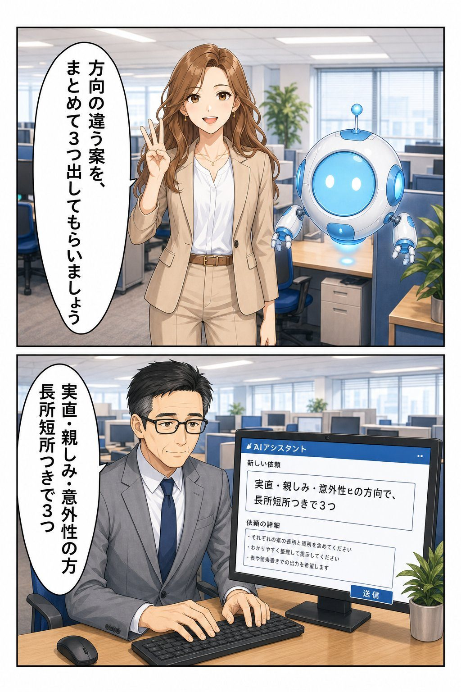
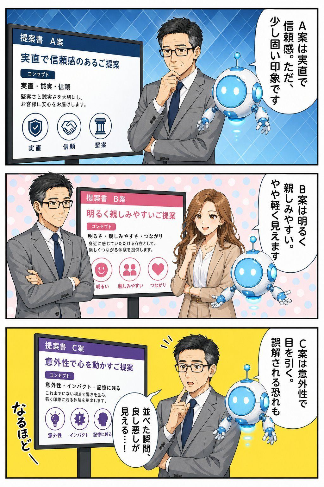
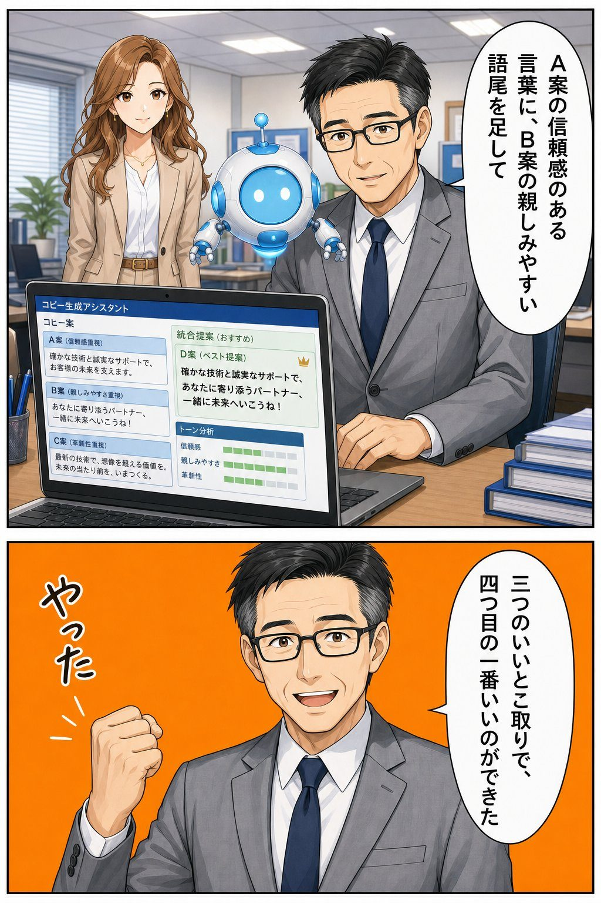
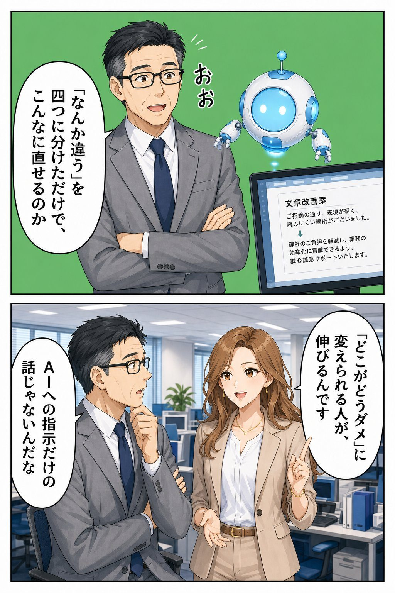
06第6章 習慣8・AIの回答を必ず検証する
習慣8 AIの回答を必ず検証する
その日の佐野健一は、いつになく機嫌がよくありませんでした。
前日の商談で、顧客に自信満々で伝えた「補助金の申請期限」が、まったくの誤りだったのです。
「アイに聞いたら、きれいな表まで作って教えてくれたんだ。
だから安心しきっていた。
でも実際の期限はもう過ぎていて……お客さんの前で、ひどく恥をかいた」
打ち合わせに現れた水島遥は、少し困った顔で、それでも静かにうなずきました。
「佐野さん、それはAIが起こす一番やっかいな失敗です。
AIは、知らないことでも堂々と答えてしまうんです」
水島いわく、AIは「答えたがり・教えたがり」の性格を持っています。
質問されると、たとえ確かな根拠がなくても、それらしい文章を組み立てて返してしまう。
これを専門的には「ハルシネーション」…つまり、もっともらしい作り話と呼ぶのだと言います。
「怖いのは、間違っているときほど自信満々に見えることです。
だからこそ、AIの回答は必ず自分で検証する。
これが8つ目の習慣です」
佐野が危うくだまされかけた日
もっともらしい間違いにだまされかける
水島は、佐野の失敗をもう少しくわしく聞くことにしました。
「その補助金の期限、アイはどんなふうに答えたんですか?」
佐野は苦い顔でスマートフォンの履歴を開きました。
「これだよ。
『申請期限は今年度末までです。
必要書類は3点、上限額は……』と、日付から金額まで、それはもう具体的にね。
表まで作ってくれた。
あんまり整っていたから、疑う気にもならなかった」
「そこが落とし穴です」と水島。
「回答が具体的で整っているほど、人は正しいと思い込む。
でも、整っていることと正しいことは、まったく別物なんです」
実を言うと、佐野はもう一件、危ういところだったと打ち明けました。
別の顧客に、ある商品の「業界シェア1位」という情報を、アイの回答をもとに伝えかけたというのです。
「送信ボタンを押す直前で、ふと引っかかってね。
念のため公式サイトを見たら、そんな順位はどこにも書いていない。
アイが、それらしく作った話だったんだ。
あのとき送っていたらと思うと、ぞっとするよ」
水島はうなずきました。
「まさにハルシネーションです。
数字・順位・日付のように、誤ると実害につながりやすく、最新の事実確認が必要なものほど、そのまま使うのは危険です。
AIに悪気はありません。
ただ、それらしい言葉を並べているだけのこともあるんです。
佐野さんが土壇場で手を止めたのは、大きな進歩ですよ」
なぜAIは「もっともらしい間違い」を答えるのか
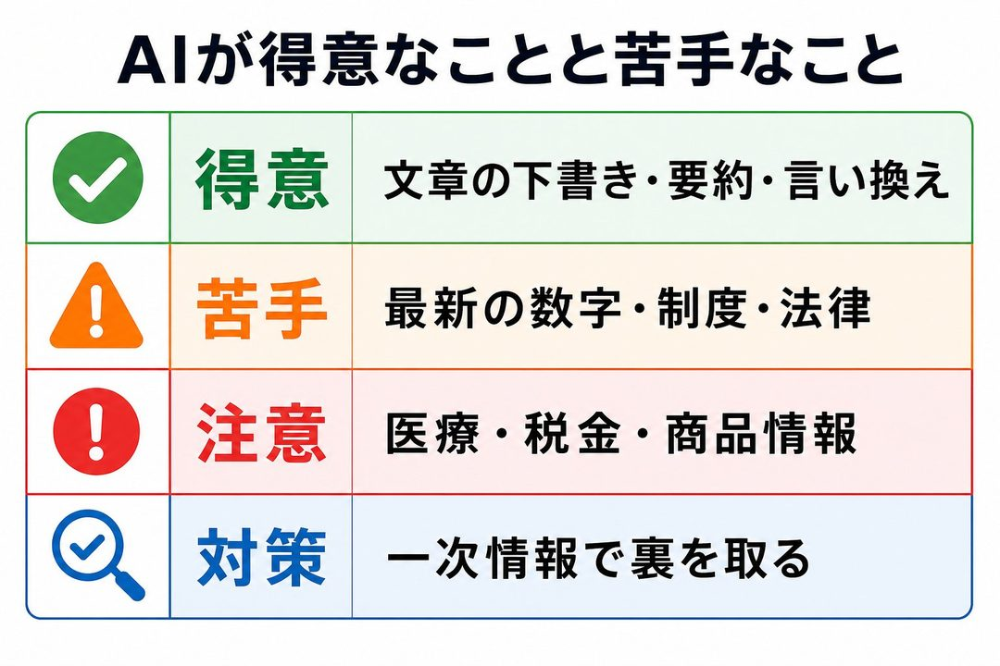
AIが得意なことと苦手なこと
佐野は率直に尋ねました。
「そもそも、なぜ間違えるんだ。
あれだけ賢いのに」
水島は、AIのしくみをやさしく説明しました。
AIは基本的に、膨大な文章のパターンから「次に来そうな言葉」を選んでつないで回答を組み立てています。
検索や添付資料を参照できる場合もありますが、それでも参照漏れや読み違いは起こります。
つまり、常に事実を確かめてから答えているとは限らないのだと言います。
「たとえるなら、たくさん本を読んだ物知りの新人です。
よく知っている話題なら見事に答える。
でも知らないことを聞かれても、『分かりません』と言うより、うろ覚えの知識でつい話を合わせてしまう。
悪気はないんです」
だから、危ないのは決まった領域だとも教わりました。
数字・制度・法律・医療・税金・商品情報…正解が一つに定まり、間違えると実害が出るものです。
「佐野さんが引っかかった補助金の期限は、まさに制度の話でした。
制度や法律は年ごとに変わります。
AIが学んだ時点の古い情報を、今のことのように答えてしまう。
ここは人間が裏を取るしかない領域です」
よくある失敗も教わりました。
「たとえば、税金の控除額をAIに聞いて、そのまま申告書に書いてしまう人がいます。
金額が古かったり、条件を取り違えていたりして、あとで訂正に追われる。
便利さに甘えて確認を飛ばした瞬間、AIは危険な道具に変わるんです」
一方で、AIが得意な仕事もはっきりしています。
文章の下書き、長い資料の要約、言い回しの言い換え。
答えが一つに決まらない「たたき台づくり」こそAIの主戦場なのだと、佐野はようやく腑に落ちました。
「なるほど。
全部を疑うんじゃなくて、疑うべき場所を見極めるのか」
「そのとおりです。
数字・日付・固有名詞・制度といった情報を一次情報で確認すれば、代表的な誤情報リスクはぐっと減らせます。
そのうえで、機密情報の扱いや、文脈の抜け落ちにも別途気を配れば、大きな事故はかなり防げます」
回答の確からしさを上げる「4つの指示」
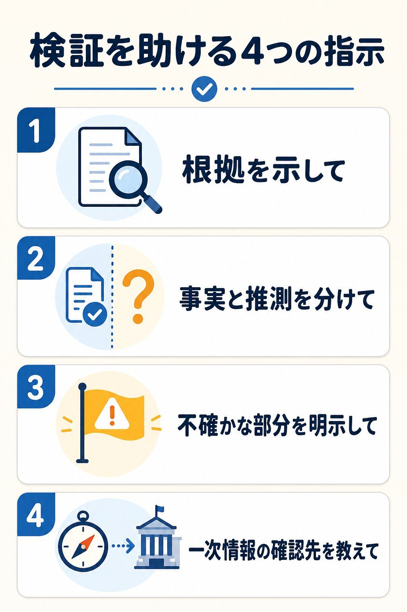
検証を助ける4つの指示
「でも水島さん、毎回すべて自分で調べ直していたら、AIを使う意味がなくなる気がするよ」
佐野のもっともな不安に、水島はほほえみました。
「実は、AI自身に手伝ってもらう方法があります。
確からしさを上げる4つの指示です」
一つ目は「根拠を示して」。
回答の理由や、もとになった考え方を一緒に書かせます。
根拠が薄い答えは、そこで見破れます。
二つ目は「事実と推測を分けて」。
確定した事実なのか、AIの推測なのかを分けて書かせる。
これだけで「断定できないこと」が見えてきます。
三つ目は「不確かな部分を明示して」。
自信のないところに正直に印をつけさせる指示です。
「確信が持てない情報は明示してください」と添えるだけで、AIはあやしい箇所を教えてくれます。
四つ目は「一次情報の確認先を教えて」。
公式サイトや発行元など、自分で確かめるべき出どころを聞きます。
最後は必ず、その一次情報にあたって裏を取る。
「この4つ、毎回ばらばらに考えるのは大変じゃないか?」と佐野。
「まとめて一文にしておけばいいんです」と水島は、佐野のスマートフォンに実際の指示を打ち込んで見せました。
この回答の根拠を示して。
事実と推測を分けて。
確信が持てない部分は正直に明示して。
最後に、自分で確認すべき公式の情報源を教えて。
「これを、事実確認が必要な質問の最後に貼りつけるだけです。
呪文のように毎回同じでかまいません」
佐野はさっそく、先ほどの補助金についてやり直してみました。
制度の内容を尋ね、末尾にこの一文を添えたのです。
すると今度のアイは、ずいぶん慎重でした。
「以下は一般的な傾向で、推測を含みます。
正確な期限や条件は必ず所管の公式ページでご確認ください」…そう前置きし、事実と推測を分け、確認先まで示してきたのです。
「まるで別人だ」と佐野は目を丸くしました。
「同じAIなのに、こんなに態度が変わるのか」
「同じAIですよ。
ただ、あなたが『慎重に答えてほしい』と伝えたから、慎重に答えているだけです」
「最後の一手」は人間が引き受ける
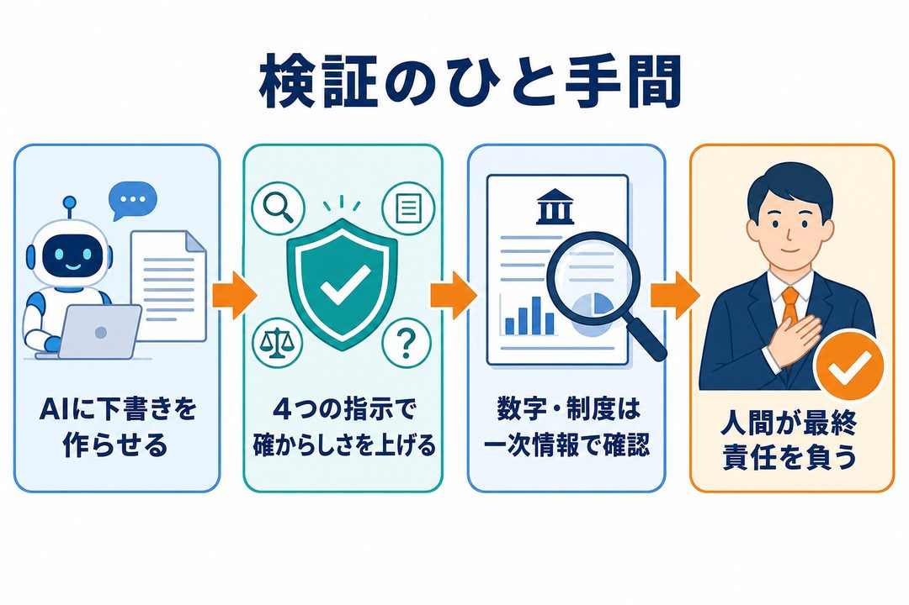
検証のひと手間
数日後、佐野はまた別の顧客に補助金の話をしました。
今度は、アイの回答を土台にしつつ、期限と条件だけは公式ページで自分の目で確かめてから伝えました。
顧客は「よく調べてくれましたね」と感心し、商談は前に進みました。
佐野は思いました。
AIに調べさせたことと、自分で確かめたことは、まったく別の重みを持つのだと。
「水島さん、分かってきたよ。
AIは調べ物のスピードを上げてくれる。
でも、お客さんの前で責任を負うのは、最後まで自分なんだな」
水島は深くうなずきました。
「そこが一番大事なところです。
AIの回答は、下書きであって最終回答ではない。
数字や制度のように間違えられない部分に、人間が最後の一手を入れる。
この一手間があるだけで、AIは危険な道具から、頼れる調べ物のパートナーに変わります」
佐野の中で、恐怖心がひとつ消えていました。
以前は「間違った情報を流したらどうしよう」とAIそのものを怖がっていた。
けれど今は、どこを疑い、どこを自分で確かめればいいかが分かる。
だからこそ、安心して使えるようになったのです。
この章のまとめ
- AIは知らないことでも堂々と答える。
回答が具体的で整っているほど、もっともらしい間違いに注意する。
- 特に数字・制度・法律・医療・税金・商品情報は必ず一次情報で確認する。
- 「この回答の根拠を示して。
事実と推測を分けて。
確信が持てない部分は明示して。
確認すべき公式の情報源を教えて」の一文で確からしさを上げる。
- 最後に責任を負い、確かめるのは人間。
この一手間がAIを安全な相棒に変える。
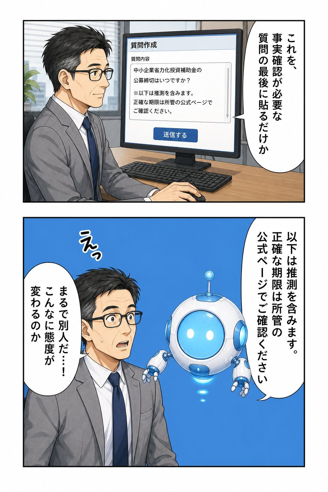
07第7章 習慣9・10・良い使い方を残し、毎日一つ任せる
習慣9・10 良い使い方を残し毎日一つ任せる
第8までの習慣を身につけた佐野は、以前とは見違えるほどAIを使いこなすようになっていました。
けれど、新しい悩みが芽生えていました。
「せっかくいい答えを引き出せても、次の日にはどう頼んだか忘れてしまうんだ。
毎回ゼロから伝え方を考え直している気がする」
さらに、意欲が空回りしている面もありました。
「これからは全部AIでやろう」と張り切って、メールも資料も議事録も企画も一気に任せようとした結果、あれもこれもと手が回らず、かえって疲れてしまったのです。
「これ、最初から自分でやったほうが早かったかも」…あの古い口癖が、また顔を出しかけていました。
水島は、その様子を見て言いました。
「佐野さん、ここまで来たら、残る習慣は2つだけです。
うまくいった使い方を残すこと。
そして、毎日一つだけ任せること。
この2つが、これまでの努力を『続く力』に変えます」
習慣9・うまくいった指示を「自分専用の型」として残す
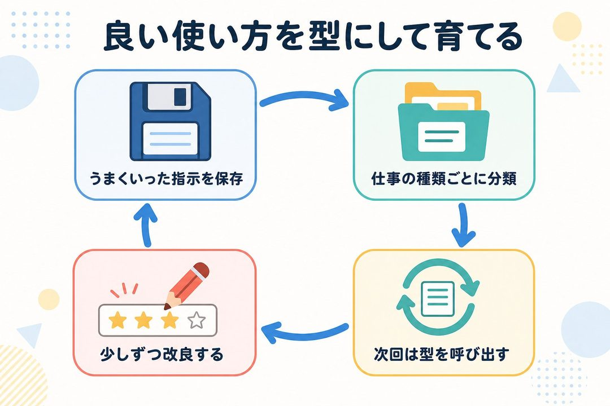
良い使い方を型にして育てる
「毎回ゼロから考え直している、と言いましたね。
それこそが、もったいないんです」と水島は切り出しました。
「一度うまくいった指示は、あなただけの財産です。
それを捨てずに残しておく。
次に同じ仕事が来たら、その型を呼び出して少し直すだけでいい。
ゼロからではなく、8割できた状態から始められます」
やり方はシンプルでした。
うまくいった指示を、仕事の種類ごとに分けてメモに保存していくのです。
水島は、佐野の日々の仕事に合わせて分類を挙げました。
メール作成・会議要約・企画立案・資料作成・SNS投稿・顧客対応…この6つが、佐野の型の入れ物になりました。
「じゃあ、さっそくやってみましょう」と水島は、佐野のパソコンでメモアプリを開きました。
「先週うまくいった、あのお詫びメールの指示。
どこにありますか?」
佐野が履歴をさかのぼると、確かにありました。
誰に・何を詫び・どう挽回するかを整理した、あの一発できれいに決まった指示です。
水島は「メール作成」という見出しの下に、それをそのまま貼りつけました。
「これで完成です。
次にお詫びメールが必要になったら、このメモを開いて、相手と用件だけ差し替える。
数秒で、質の高い下書きが戻ってきます。
探す時間も、考え直す時間も、もう要りません」
佐野はその日のうちに、うまくいった指示を6つの箱に振り分けていきました。
会議要約の型、企画立案の型、資料作成の型…散らばっていた成功が、一つずつ棚に収まっていく感覚でした。
「これはつまり、自分専用の仕事の型が、少しずつ育っていくということですね」
「そのとおりです。
使うたびに『ここはこう直したほうがいい』と気づく。
その改良を型に書き足していく。
すると型はどんどん賢くなり、あなたの仕事の癖や言葉づかいまで反映されていきます」
ただし、と水島は注意も添えました。
「よくある失敗は、その場でうまくいった指示を、保存せずに閉じてしまうことです。
『また今度メモしよう』と思っているうちに忘れる。
うまくいった直後の、熱いうちに残す。
これが鉄則です」
佐野は感心しました。
繰り返し使うほど、AIとの呼吸が合ってくる。
それはまるで、同じ新人と長く組むうちに、あうんの呼吸が生まれていくのと同じでした。
ばらばらに使い捨てていたら、いつまでも初対面のままだったのです。
習慣10・全部ではなく「今日の一つ」を任せる
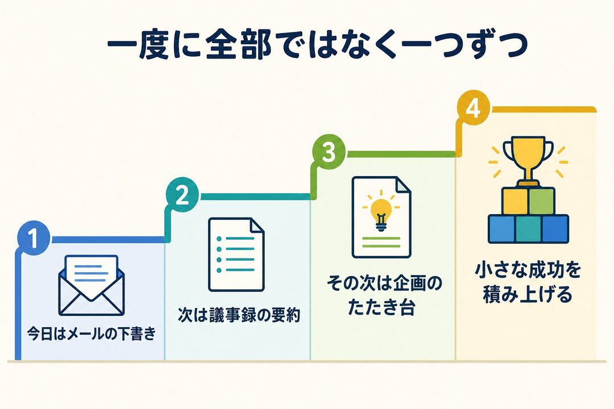
一度に全部ではなく一つずつ
次に水島が向き合ったのは、佐野の「空回り」でした。
「一度に全部AI化しようとすると、たいてい挫折します。
覚えることが多すぎて、うまくいかない仕事に気を取られ、結局どれも中途半端になる。
やる気があるほど、この落とし穴にはまります」
「まさに私のことだ」と佐野は苦笑しました。
「先週、意気込んで5つの仕事を一気にAIに投げたら、どれも思うようにいかなくて、夜には『やっぱりAIなんて』とうんざりしていたよ」
「それが、よくある失敗です」と水島。
「おすすめは逆です。
今日の仕事から、一つだけAIに任せてみる。
それで十分です」
「今日の一つ、か。
じゃあ……」佐野は机の上のやりかけの仕事を見渡しました。
商談報告メール、来週の企画書、部下の資料チェック、取引先への見積もり。
「この中なら、毎朝必ず書く商談報告メールが一番いいかな。
数も多いし、形も決まっている」
「完璧な選び方です」と水島は微笑みました。
「毎日繰り返すもの、形が決まっているもの。
そこから始めると、効果がすぐ実感できます」
佐野はその場で決めました。
今日から一週間は、商談報告メールだけをアイに任せる。
ほかの仕事にはいつもどおり自分で取り組む…そう線を引いたのです。
すると不思議と、負担を感じません。
一つに絞ったからこそ、じっくり伝え方を工夫でき、下書きの質もぐんと上がっていきました。
うまくいけば、「AIに聞いてみよう」という気持ちが自然と芽生えます。
この日常的に相談する癖こそが、使いこなせる人とそうでない人を分けるのだと、佐野は身をもって知りました。
一週間後、佐野は自然と二つ目、三つ目へと任せる仕事を増やしていました。
気負いがないから、続く。
続くから、身につく。
あれほど遠かった「AIを使いこなす自分」に、いつのまにか近づいていたのです。
「任せる・判断する・自分でやる」を仕分ける
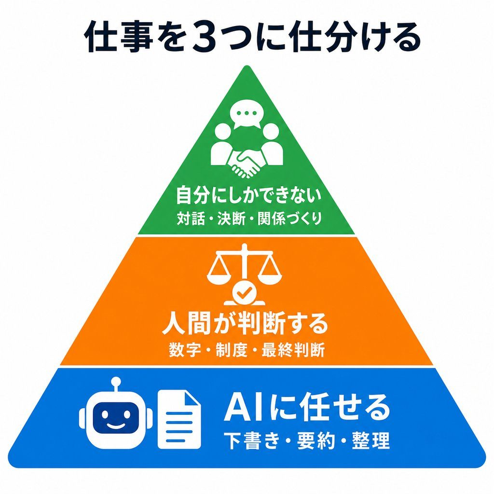
仕事を3つに仕分ける
任せる仕事が増えるにつれ、佐野の中にひとつの地図ができあがっていきました。
それは、仕事を3つに仕分けるという発想でした。
一つ目は「AIに任せる仕事」。
文章の下書き、長い資料の要約、情報の整理。
何度も繰り返す作業や、たたき台づくり。
ここはアイの独壇場です。
二つ目は「人間が判断する仕事」。
第6章で学んだとおり、数字や制度の確認、そして最終的にどの案を選ぶかの判断。
AIの回答をうのみにせず、責任を持って決める部分です。
三つ目は「自分にしかできない仕事」。
顧客との信頼づくり、チームへの声かけ、腹をくくった決断。
人と人との間にしか生まれない仕事は、誰にも代われません。
「以前の私は、この3つをぜんぶ自分で抱え込んでいた」と佐野は振り返りました。
「だから、いつも時間が足りなかったんだ」
水島は微笑みました。
「仕分けができると、任せていい仕事が驚くほど多いことに気づきます。
そして、自分が本当に力を注ぐべき仕事も、はっきり見えてくる。
習慣9と10は、そのための地図づくりなんです」
この章のまとめ
- 習慣9：うまくいった指示をメール作成・会議要約・企画立案・資料作成・SNS投稿・顧客対応に分類保存し、自分専用の仕事の型に育てる。
うまくいった直後の熱いうちに残す。
- 習慣10：一度に全部ではなく、今日の仕事から一つだけ任せる。
毎日繰り返す、形の決まった仕事から始める。
- 仕事を「AIに任せる」「人間が判断する」「自分にしかできない」の3つに仕分ける。
- 気負わず続けることが、使いこなせる人への一番の近道。
08最終章 AIは仕事を奪う存在ではなく、可能性を広げる相棒
AIは可能性を広げる相棒
10の習慣を実践しはじめてから、佐野の毎日は静かに、けれど確実に変わっていました。
以前は残業してこなしていた報告書やメールが、就業時間内に片づく。
同僚から「最近、余裕があるね」と言われることも増えました。
あの「結局自分でやったほうが早い」という口癖は、もうすっかり影をひそめていました。
けれど、佐野の心にはひとつ、正直な不安も残っていました。
「水島さん。
こんなにAIが仕事をやってくれるようになると……いつか、私の仕事そのものがなくなるんじゃないかと、たまに怖くなるんだ」
水島は、その不安を軽くあしらったりはしませんでした。
少し間を置いて、静かに問い返しました。
「佐野さん。
ひとつだけ聞かせてください。
あなたはAIを使って、何を減らしたいですか?」
AIが増やしてくれるのは「時間」と「可能性」
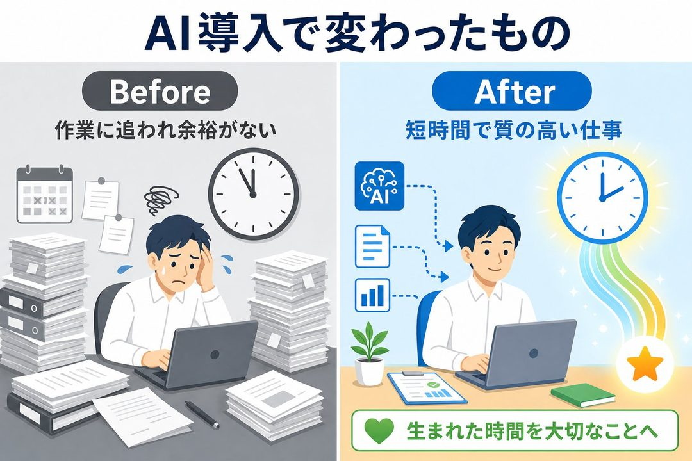
AI導入で変わったもの
思いがけない問いに、佐野はしばらく黙り込みました。
何を減らしたいか。
そう問われて初めて、自分がずっと「作業に追われていた」ことに気づいたのです。
「そうだな……下書きに何時間もかける時間。
同じような資料を毎回ゼロから作る時間。
ああいう、なくてもいい作業を減らしたい」
「いいですね」と水島はうなずきました。
「AIが本当にくれるのは、答えではありません。
時間です。
そして、その時間で何ができるかという可能性です」
水島は続けました。
国内では、生成AIを使った経験のある人が今や2人に1人にまで増えています。
企業の約3社に1社が、業務でAIを取り入れはじめている。
AIはもう、特別な人だけの道具ではなくなったのです。
「でも、多くの人がまだ、AIを『作業を速くする道具』としてしか見ていません。
速く終わらせて、空いた時間にまた別の作業を詰め込む。
それではもったいない」
「たしかに、私も最初はそうだった」と佐野は苦笑しました。
「速く終わった分、次の仕事を入れていた」
「AIが生み出した時間を、また作業で埋め戻さない。
そこで生まれた余白を、人にしかできないことに使う。
それができたとき、AIは初めて『可能性を広げる相棒』になるんです」
目的を決め、判断し、責任を持つのは人間
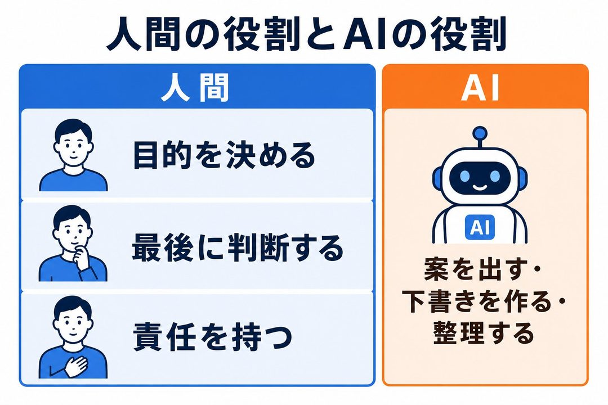
人間の役割とAIの役割
「でも、佐野さんが感じた不安…仕事を奪われるのでは、という怖さ。
その答えも、実はもう出ています」と水島は言いました。
「これまでの10の習慣を思い出してください。
目的を決めたのは誰でしたか?」
「……私だ」
「最後に、どの案を選ぶか判断したのは?」
「私だ」
「お客さんの前で責任を負ったのは?」
「それも、私だよ」
水島は微笑みました。
「そうです。
AIは案を出し、下書きを作り、情報を整理してくれる。
でも、何のためにやるのかを決め、最後に判断し、結果に責任を持つのは、いつも人間なんです。
ここはAIには代われません。
むしろ、AIが下働きを引き受けてくれるからこそ、人間はこの一番大事な役割に集中できる」
「考えてみれば」と佐野は思い返しました。
「10の習慣は、どれも『AIに丸投げしない』ための工夫だったな。
背景を伝えるのも、相談するのも、検証するのも、最後は自分がハンドルを握るためだった」
「よく気づかれましたね」と水島。
「AIに主導権を渡すのではなく、AIを従えて、より遠くまで行く。
それがこの10習慣の本質なんです」
佐野は、胸のつかえが取れる思いがしました。
恐れていたのは、AIに主導権を奪われることでした。
けれど実際は逆だったのです。
判断と責任という、人間にしかできない仕事の輪郭が、AIによってかえってくっきり浮かび上がった。
アイは、佐野の座を奪う存在ではなく、佐野を本来の仕事に押し上げてくれる存在でした。
「自分にしかできないこと」に時間を使う
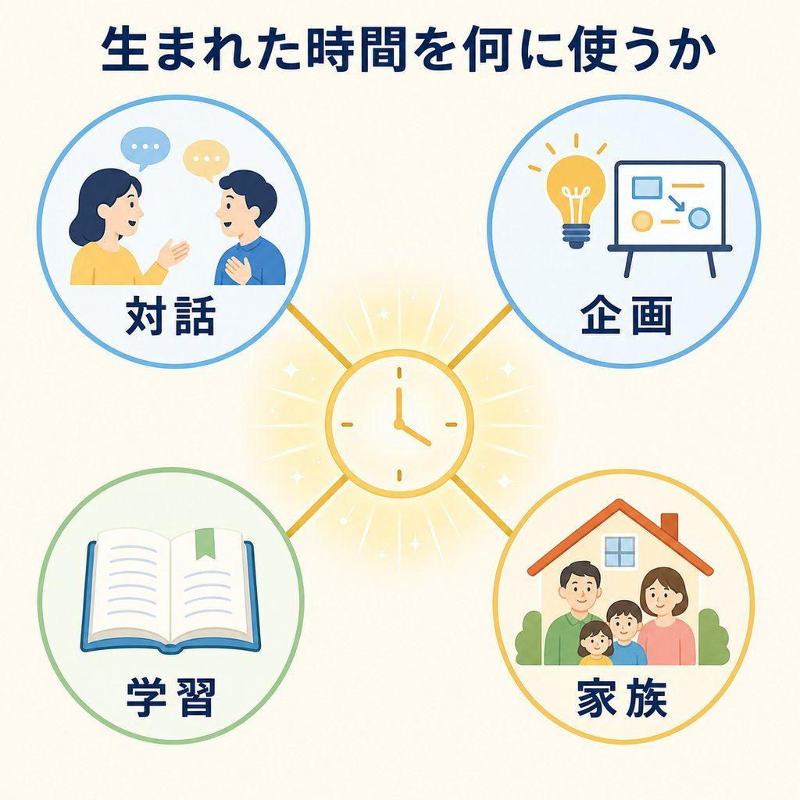
生まれた時間を何に使うか
水島の最初の問い…「何を減らしたいですか」に、佐野はようやく、はっきりと答えることができました。
「作業を減らして、自分にしかできないことに、もっと時間を使いたい。
お客さんとじっくり話すこと。
チームの若手の相談に乗ること。
新しい企画をゼロから考えること。
それに、家族と過ごす時間も」
言葉にしながら、佐野は気づきました。
AIを学んだ本当の理由は、AIを使うためではなかったのだと。
人と向き合い、考え、決める…そういう人間らしい仕事や暮らしのために、時間を取り戻したかったのです。
「実はこの前、久しぶりに定時で帰って、娘の話をゆっくり聞いたんだ」と佐野は少し照れながら言いました。
「それだけのことなのに、妙にうれしくてね。
ああ、こういう時間のために、私はAIを覚えたんだって、しみじみ思ったよ」
水島は、これまでで一番うれしそうにうなずきました。
「それが答えです、佐野さん。
AIは、対話・企画・学習・家族…あなたが大切にしたいものに使う時間を、増やすためにある。
仕事を奪う存在ではなく、あなたの可能性を広げる相棒。
そう思えたなら、もう10の習慣は、あなたのものです」
かたわらでは、アイが小さく光を灯していました。
かつては的外れな答えばかり返していた頼りない新人は、いつのまにか、佐野の言葉を受け止め、支える相棒に育っていました。
育てたのはAIの性能ではなく、佐野自身の毎日の習慣だったのです。
この章のまとめ
- AIがくれるのは答えではなく、時間と可能性。
生まれた余白を作業で埋め戻さない。
- 目的を決め、最後に判断し、責任を持つのは、いつも人間。
ここはAIに代われない。
- 減らしたいのは作業。
増やしたいのは、自分にしかできないことに使う時間。
- AIは仕事を奪う存在ではなく、可能性を広げる相棒。
育てるのは毎日の習慣。
09おわりに 明日からではなく、今日の仕事を一つだけ
今日の一つから始めよう
ここまで、佐野健一と水島遥の物語を通して、10のAI活用習慣をお伝えしてきました。
読み終えたいま、あなたはこう感じているかもしれません。
「なるほど、よく分かった。
明日からやってみよう」と。
けれど、あえてお願いさせてください。
明日からではなく、今日、始めてください。
10の習慣を、一度に全部やろうとしなくて大丈夫です。
それはむしろ、続かなくなる近道でした。
思い出してください。
佐野が変わりはじめたのは、全部を任せようと張り切ったときではなく、今日の仕事を一つだけAIに相談してみた、あの小さな一歩からでした。
だから、あなたも一つでいいのです。
今日これから書くメールの下書きを、AIに頼んでみる。
長い資料を、要約してもらう。
明日の会議の論点を、一緒に整理してみる。
どれでもかまいません。
あなたの今日の仕事の中から、一つだけ選んで、AIに話しかけてみてください。
きっと最初は、期待どおりの答えは返ってこないでしょう。
それでいいのです。
うまくいかないのは、あなたのせいでも、AIの限界でもありません。
まだ、背景を伝え、相談し、一緒に直す…その習慣が始まったばかりだからです。
優秀な新人も、初日から完璧には働けません。
教え、相談し、良い使い方を残していくうちに、少しずつ頼れる相棒に育っていきます。
この本で紹介した習慣は、どれも特別なものではありません。
魔法のような呪文も、難しい専門知識もいりませんでした。
必要だったのは、AIを道具ではなく、一緒に働く相手として扱うという、ほんの少しの心がけだけです。
そして、忘れないでください。
AIを使いこなすことは、ゴールではありません。
その先に、あなたが取り戻したい時間があります。
人と向き合う時間、じっくり考える時間、大切な人と過ごす時間。
AIは、その時間を増やすためにあるのです。
さあ、本を閉じたら、いつものパソコンやスマートフォンを開いてみてください。
今日の仕事を一つだけ、AIに相談してみましょう。
あなたの新しい相棒との対話は、その一言から始まります。
あなたの毎日が、今日から少しずつ変わっていくことを、心から願っています。
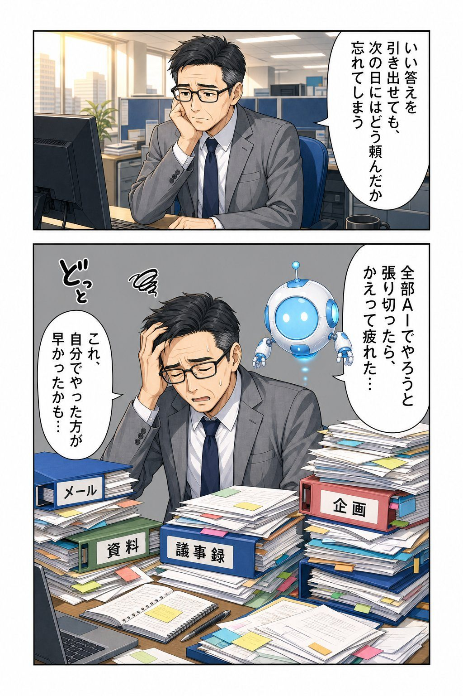
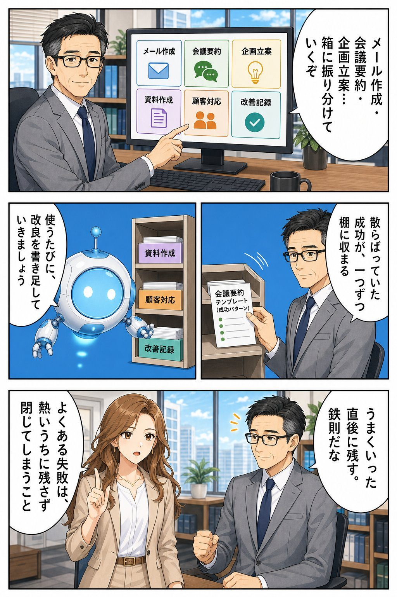
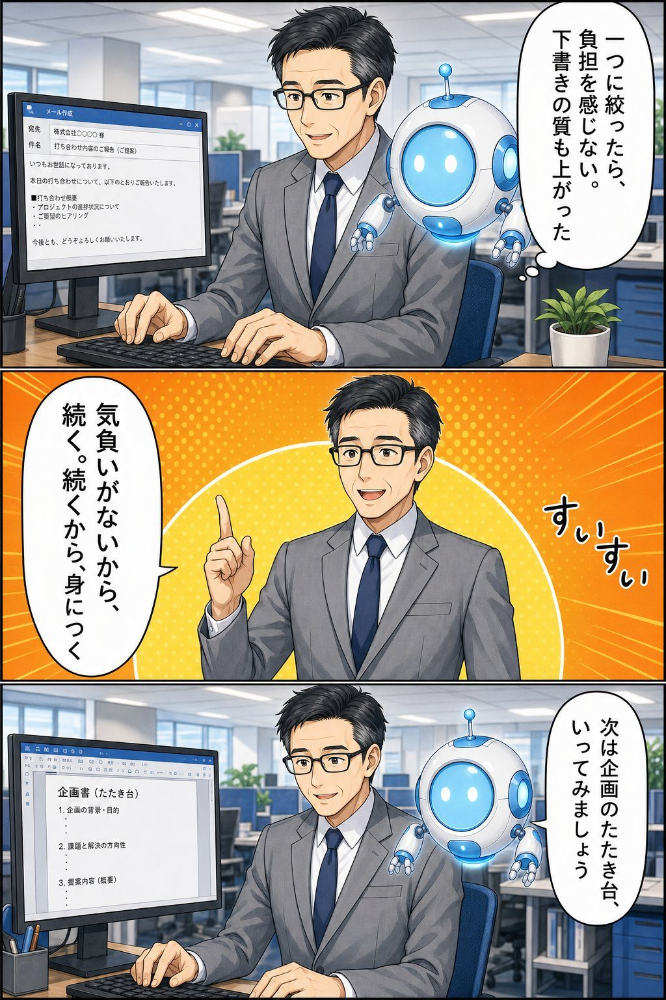
© 竹谷知悦 / 特別プレゼント版